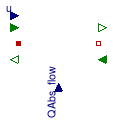
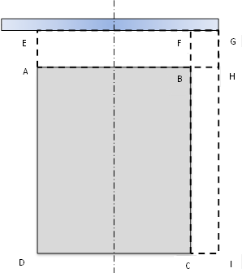
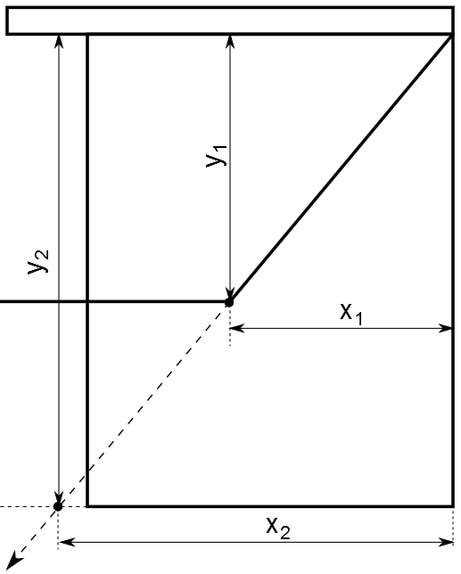
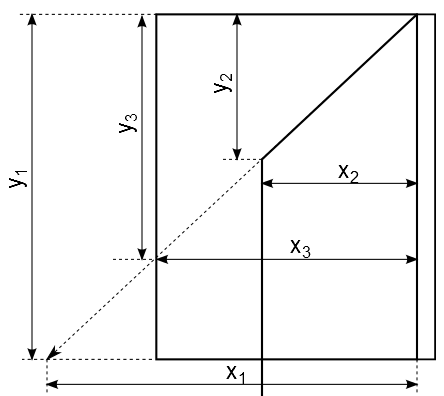
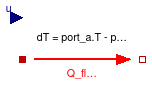
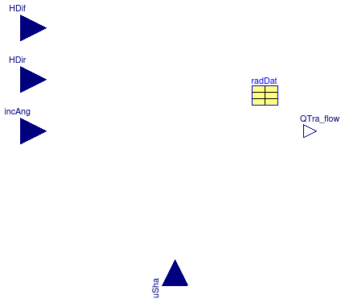

Package with base classes for Buildings.HeatTransfer.Windows
Information
This package contains base classes that are used to construct the models in
Buildings.HeatTransfer.Windows.
Extends from Modelica.Icons.BasesPackage (Icon for packages containing base classes).
Package Content
Absorbed radiation by window

Information
The model calculates absorbed solar radiation on the window.
The calculations follow the description in Wetter (2004), Appendix A.4.3.
The absorbed radiation by exterior shades includes:
-
the directly absorbed exterior radiation:
AWin*uSha*(HDir+HDif)*(1-tau-rho)
-
the indirectly absorbed exterior radiantion from reflection (angular part):
AWin*uSha*HDir*tau*rho(IncAng)*(1-tau-rho)
-
the indirectly absorbed of exterior irradiantion from reflection (diffusive part):
AWin*uSha*HDif*tau*rho(HEM)*(1-tau-rho)
-
the absorbed interior radiation is neglected.
The output is absRad[2, 1]
The absorbed radiation by interior shades includes:
-
the absorbed exterior radiation (angular part):
AWin*uSha*HDir*alpha(IncAng)
-
the absorbed exterior radiation (diffusive part):
AWin*uSha*HDif*alpha(HEM)
-
the absorbed interior radiation (diffusive part):
AWin*uSha*HRoo*(1-tau-rho)
The output is absRad[2, N+2]
The absorbed radiation by glass includes:
-
the absorbed radiation by unshaded part (diffusive part):
AWin*(1-uSha)*(HDif*alphaEx(HEM)+HRoo*alphaIn(HEM))
-
the absorbed radiation by unshaded part (angular part from exterior source):
AWin*(1-uSha)*HDir*alphaEx(IncAng)
-
the absorbed radiaiton by shaded part (diffusive part):
AWin*uSha*(HDif*alphaExSha(HEM)+HRoo*alphaInSha(HEM))
-
the absorbed radiation by shaded part (angular part from exterior source):
AWin*uSha*HDir*alphaExSha(IncAng)
The output is absRad[1, 2:N+1] = Part1 + Part2; absRad[2, 2:N+1] = Part3 + Part4
References
Extends from Buildings.HeatTransfer.Windows.BaseClasses.PartialRadiation (Partial model for variables and data used in radiation calculation).
Parameters
| Type | Name | Default | Description |
|---|
| Boolean | haveExteriorShade | | Set to true if window has an exterior shade |
| Boolean | haveInteriorShade | | Set to true if window has an interior shade |
| Area | AWin | | Area of window [m2] |
| Glass |
| Integer | N | | Number of glass layers |
| Length | xGla[N] | | Thickness of glass [m] |
| TransmissionCoefficient | tauGlaSol[N] | | Solar transmissivity of glass [1] |
| ReflectionCoefficient | rhoGlaSol_a[N] | | Solar reflectivity of glass at surface a (facing outside) [1] |
| ReflectionCoefficient | rhoGlaSol_b[N] | | Solar reflectivity of glass at surface b (facing room-side) [1] |
| Shade |
| TransmissionCoefficient | tauShaSol_a | | Solar transmissivity of shade for irradiation from air-side [1] |
| TransmissionCoefficient | tauShaSol_b | | Solar transmissivity of shade for irradiation from glass-side [1] |
| ReflectionCoefficient | rhoShaSol_a | | Solar reflectivity of shade for irradiation from air-side [1] |
| ReflectionCoefficient | rhoShaSol_b | | Solar reflectivity of shade for irradiation from glass-side [1] |
Connectors
| Type | Name | Description |
|---|
| input RealInput | uSha | Control signal for shading (0: unshaded; 1: fully shaded) |
| input RealInput | HDif | Diffussive solar radiation [W/m2] |
| input RealInput | incAng | Incident angle [rad] |
| input RealInput | HDir | Direct solar radiation [W/m2] |
| input RealInput | HRoo | Diffussive radiation from room [W/m2] |
| output RealOutput | QAbsExtSha_flow | Absorbed interior and exterior radiation by exterior shading device [W] |
| output RealOutput | QAbsIntSha_flow | Absorbed interior and exterior radiation by interior shading device [W] |
| output RealOutput | QAbsGlaUns_flow[N] | Absorbed interior and exterior radiation by unshaded part of glass [W] |
| output RealOutput | QAbsGlaSha_flow[N] | Absorbed interior and exterior radiation by shaded part of glass [W] |
Modelica definition
block AbsorbedRadiation
"Absorbed radiation by window"
extends Buildings.HeatTransfer.Windows.BaseClasses.PartialRadiation;
Modelica.Blocks.Interfaces.RealInput HRoo(quantity="RadiantEnergyFluenceRate",
unit="W/m2")
"Diffussive radiation from room ";
Modelica.Blocks.Interfaces.RealOutput QAbsExtSha_flow(
final quantity="Power",
final unit="W")
"Absorbed interior and exterior radiation by exterior shading device";
Modelica.Blocks.Interfaces.RealOutput QAbsIntSha_flow(
final quantity="Power",
final unit="W")
"Absorbed interior and exterior radiation by interior shading device";
Modelica.Blocks.Interfaces.RealOutput QAbsGlaUns_flow[N](
each quantity=
"Power",
each final unit="W")
"Absorbed interior and exterior radiation by unshaded part of glass";
Modelica.Blocks.Interfaces.RealOutput QAbsGlaSha_flow[N](
each quantity=
"Power",
each final unit="W")
"Absorbed interior and exterior radiation by shaded part of glass";
output Modelica.SIunits.Power absRad[2, N + 2]
"Absorbed interior and exterior radiation.
(absRad[2,1]: exterior shading device,
absRad[1,2 to N+1]: glass (unshaded part),
absRad[2,2 to N+1]: glass (shaded part),
absRad[2,N+2]: interior shading device)";
protected
constant Integer k=1;
Real x;
final parameter Integer NDIR=radDat.NDIR;
final parameter Integer HEM=radDat.HEM;
constant Integer NoShade=1;
constant Integer Shade=2;
constant Integer Interior=1;
constant Integer Exterior=2;
final parameter Real coeAbsEx[2, radDat.N, radDat.HEM + 2](
each fixed=false);
final parameter Real coeRefExtPan1[radDat.HEM + 2](
each fixed=false)
"Reflectivity of pane 1";
final parameter Real coeAbsIn[2, radDat.N](
each fixed=false);
final parameter Real coeAbsDevExtIrrIntSha[radDat.HEM + 2](
each fixed=false)
"Absorptivity of interior shading device for exterior radiation";
final parameter Real coeAbsDevExtIrrExtSha=1 - radDat.traRefShaDev[1, 1] -
radDat.traRefShaDev[2, 1]
"Absorptivity of exterior shading device for exterior radiation";
final parameter Real coeAbsDevIntIrrIntSha=radDat.devAbsIntIrrIntSha
"Absorptivity of interior shading device for interior radiation";
final parameter Real coeAbsDevIntIrrExtSha=1 - radDat.winTraRefIntIrrExtSha[1]
- radDat.winTraRefIntIrrExtSha[2]
"Absorptivity of exterior shading device for interior radiation";
Real tmpNoSha;
Real tmpSha;
Real incAng2;
initial equation
//**************************************************************
// Assign coefficients.
// Data dimension changes from Original ([1 : HEM]) to New ([2 : HEM+1])
// with 2 dummy variable for interpolation.
//**************************************************************
// Glass
for i
in 1:N
loop
coeAbsIn[NoShade, i] = radDat.absIntIrrNoSha[i];
// Properties for glass with shading
if haveInteriorShade
then
coeAbsIn[Shade, i] = radDat.absIntIrrIntSha[i];
elseif haveExteriorShade
then
coeAbsIn[Shade, i] = radDat.absIntIrrExtSha[i];
else
// No Shade
coeAbsIn[Shade, i] = 0.0;
end if;
for j
in 1:HEM
loop
// Properties for glass without shading
coeAbsEx[NoShade, i, j + 1] = radDat.absExtIrrNoSha[i, j];
// Properties for glass with shading
if haveInteriorShade
then
coeAbsEx[Shade, i, j + 1] = radDat.absExtIrrIntSha[i, j];
elseif haveExteriorShade
then
coeAbsEx[Shade, i, j + 1] = radDat.absExtIrrExtSha[i, j];
else
// No Shade
coeAbsEx[Shade, i, j + 1] = 0.0;
end if;
end for;
// Dummy variables at 1 and HEM+2
for k
in NoShade:Shade
loop
coeAbsEx[k, i, 1] = coeAbsEx[k, i, 2];
coeAbsEx[k, i, HEM + 2] = coeAbsEx[k, i, HEM + 1];
end for;
end for;
// Glass Pane 1: Reflectivity
for j
in 1:HEM
loop
coeRefExtPan1[j + 1] = radDat.traRef[2, 1, N, j];
end for;
// Interior shades
for j
in 1:HEM
loop
coeAbsDevExtIrrIntSha[j + 1] = radDat.devAbsExtIrrIntShaDev[j];
end for;
// Dummy variables at 1 and HEM+2
coeRefExtPan1[1] = coeRefExtPan1[2];
coeRefExtPan1[HEM + 2] = coeRefExtPan1[HEM + 1];
coeAbsDevExtIrrIntSha[1] = coeAbsDevExtIrrIntSha[2];
coeAbsDevExtIrrIntSha[HEM + 2] = coeAbsDevExtIrrIntSha[HEM + 1];
algorithm
absRad[NoShade, 1] := 0.0;
absRad[NoShade, N + 2] := 0.0;
absRad[Shade, 1] := 0.0;
absRad[Shade, N + 2] := 0.0;
//**************************************************************
// Glass: absorbed diffusive radiation from exterior and interior sources
//**************************************************************
for i
in 1:N
loop
absRad[NoShade, i + 1] := AWin*(1 - uSha_internal)*(HDif*coeAbsEx[NoShade,
i, HEM + 1] + HRoo*coeAbsIn[NoShade, i]);
absRad[Shade, i + 1] := AWin*uSha_internal*(HDif*coeAbsEx[Shade, i, HEM + 1]
+ HRoo*coeAbsIn[Shade, i]);
end for;
//**************************************************************
// Shading device: absorbed radiation from exterior source
//**************************************************************
// Exterior Shading Device:
// direct radiation: 1. direct absorption;
// diffusive radiation: 1. direct absorption 2. absorption from back reflection
if haveExteriorShade
then
absRad[Shade, 1] := AWin*uSha_internal*coeAbsDevExtIrrExtSha*(HDif + HDir
+ HDif*radDat.traRefShaDev[1, 1]*radDat.traRef[2, 1, N, HEM]);
// Interior Shading Device: diffusive radiation from both interior and exterior
elseif haveInteriorShade
then
absRad[Shade, N + 2] := AWin*uSha_internal*(HDif*radDat.devAbsExtIrrIntShaDev[
HEM] + HRoo*coeAbsDevIntIrrIntSha);
end if;
//**************************************************************
// Glass, Device: add absorbed direct radiation from exterior sources
//**************************************************************
// Use min() instead of if() to avoid event
incAng2 :=
min(incAng, 0.5*Modelica.Constants.pi);
x := 2*(NDIR - 1)*
abs(incAng2)/Modelica.Constants.pi
"x=(index-1)*incAng/(0.5pi), 0<=x<=NDIR";
x := x + 2;
for i
in 1:N
loop
// Glass without shading: Add absorbed direct radiation
tmpNoSha :=
Buildings.HeatTransfer.Windows.BaseClasses.smoothInterpolation({
coeAbsEx[NoShade, i, k]
for k
in 1:(HEM + 2)}, x);
absRad[NoShade, i + 1] := absRad[NoShade, i + 1] + AWin*HDir*(1 -
uSha_internal)*tmpNoSha;
// Glass with shading: add absorbed direct radiation
tmpSha :=
Buildings.HeatTransfer.Windows.BaseClasses.smoothInterpolation({
coeAbsEx[Shade, i, k]
for k
in 1:(HEM + 2)}, x);
absRad[Shade, i + 1] := absRad[Shade, i + 1] + AWin*HDir*uSha_internal*
tmpSha;
end for;
// Interior shading device: add absorbed direct radiation
if haveInteriorShade
then
tmpSha :=
Buildings.HeatTransfer.Windows.BaseClasses.smoothInterpolation({
coeAbsDevExtIrrIntSha[k]
for k
in 1:(HEM + 2)}, x);
absRad[Shade, N + 2] := absRad[Shade, N + 2] + AWin*HDir*uSha_internal*
tmpSha;
end if;
// Exterior shading device: add absorbed reflection of direct radiation from exterior source
if haveExteriorShade
then
tmpNoSha :=
Buildings.HeatTransfer.Windows.BaseClasses.smoothInterpolation({
coeRefExtPan1[k]
for k
in 1:(HEM + 2)}, x);
absRad[Shade, 1] := absRad[Shade, 1] + AWin*HDir*uSha_internal*
coeAbsDevExtIrrExtSha*tmpNoSha;
end if;
// Assign quantities to output connectors
QAbsExtSha_flow := absRad[2, 1];
QAbsIntSha_flow := absRad[2, N + 2];
QAbsGlaUns_flow[:] := absRad[1, 2:N + 1];
QAbsGlaSha_flow[:] := absRad[2, 2:N + 1];
end AbsorbedRadiation;
Model for center of glass of a window construction

Information
This is a model for the heat transfer through the center of the glass.
The properties of the glazing system is defined by the parameter
glaSys.
The model contains these main component models:
Note that this model does not compute heat conduction through the frame and
it does not model the convective heat transfer at the exterior and interior
surface. These models are implemented in
Buildings.HeatTransfer.Windows.Window,
Buildings.HeatTransfer.Windows.ExteriorHeatTransfer, and
Buildings.HeatTransfer.Windows.InteriorHeatTransfer
Extends from Buildings.HeatTransfer.Radiosity.BaseClasses.RadiosityTwoSurfaces (Model for the radiosity balance of a device with two surfaces).
Parameters
| Type | Name | Default | Description |
|---|
| Area | A | | Surface area [m2] |
| Angle | til | | Surface tilt (only 90 degrees=vertical is implemented) [rad] |
| Generic | glaSys | | Glazing system |
| Boolean | linearize | false | Set to true to linearize emissive power |
| Advanced |
| Boolean | homotopyInitialization | true | = true, use homotopy method |
Connectors
| Type | Name | Description |
|---|
| input RadiosityInflow | JIn_a | Incoming radiosity at surface a [W] |
| input RadiosityInflow | JIn_b | Incoming radiosity at surface b [W] |
| output RadiosityOutflow | JOut_a | Outgoing radiosity at surface a [W] |
| output RadiosityOutflow | JOut_b | Outgoing radiosity at surface b [W] |
| input RealInput | u | Input connector, used to scale the surface area to take into account an operable shading device |
| HeatPort_a | glass_a | Heat port connected to the outside facing surface of the glass |
| HeatPort_b | glass_b | Heat port connected to the room-facing surface of the glass |
| input RealInput | QAbs_flow[nGlaLay] | Solar radiation absorbed by glass [W] |
Modelica definition
model CenterOfGlass
"Model for center of glass of a window construction"
extends Buildings.HeatTransfer.Radiosity.BaseClasses.RadiosityTwoSurfaces;
parameter Modelica.SIunits.Area A
"Heat transfer area";
parameter Modelica.SIunits.Angle til(displayUnit="deg")
"Surface tilt (only 90 degrees=vertical is implemented)";
parameter Buildings.HeatTransfer.Data.GlazingSystems.Generic glaSys
"Glazing system";
parameter Boolean linearize=false
"Set to true to linearize emissive power";
parameter Boolean homotopyInitialization = true
"= true, use homotopy method";
Modelica.Blocks.Interfaces.RealInput u
"Input connector, used to scale the surface area to take into account an operable shading device";
Buildings.HeatTransfer.Windows.BaseClasses.GlassLayer[nGlaLay] glass(
each final A=A,
final x=glaSys.glass.x,
final k=glaSys.glass.k,
final absIR_a=glaSys.glass.absIR_a,
final absIR_b=glaSys.glass.absIR_b,
final tauIR=glaSys.glass.tauIR,
each final linearize=linearize,
each final homotopyInitialization=homotopyInitialization)
"Window glass layer";
Buildings.HeatTransfer.Windows.BaseClasses.GasConvection gas[nGlaLay-1](
each final A=A,
final gas=glaSys.gas,
each final til=til,
each linearize=linearize,
each final homotopyInitialization=homotopyInitialization)
"Window gas layer";
// Note that the interior shade is flipped horizontally. Hence, surfaces a and b are exchanged,
// i.e., surface a faces the room, while surface b faces the window
Modelica.Thermal.HeatTransfer.Interfaces.HeatPort_a glass_a
"Heat port connected to the outside facing surface of the glass";
Modelica.Thermal.HeatTransfer.Interfaces.HeatPort_b glass_b
"Heat port connected to the room-facing surface of the glass";
Modelica.Blocks.Interfaces.RealInput QAbs_flow[nGlaLay](
each unit="W",
each quantity = "Power")
"Solar radiation absorbed by glass";
protected
final parameter Integer nGlaLay =
size(glaSys.glass, 1)
"Number of glass layers";
equation
for i
in 1:nGlaLay-1
loop
connect(glass[i].port_b, gas[i].port_a);
connect(gas[i].port_b, glass[i+1].port_a);
connect(glass[i].JOut_b, glass[i+1].JIn_a);
connect(glass[i].JIn_b, glass[i+1].JOut_a);
connect(u, gas[i].u);
end for;
for i
in 1:nGlaLay
loop
connect(u, glass[i].u);
end for;
connect(glass_b, glass[nGlaLay].port_b);
connect(glass_a, glass[1].port_a);
connect(JIn_a, glass[1].JIn_a);
connect(glass[1].JOut_a, JOut_a);
connect(glass[nGlaLay].JOut_b, JOut_b);
connect(JIn_b, glass[nGlaLay].JIn_b);
connect(glass.QAbs_flow, QAbs_flow);
end CenterOfGlass;
Model for the heat transfer coefficient at the outside of the window

Information
Model for the convective heat transfer coefficient at the outside of a window.
The computation is according to TARCOG 2006, which specifies the convection
coefficient as
h = 4+4 v
where v is the wind speed in m/s and
h is the convective heat transfer coefficient in W/(m2*K).
References
TARCOG 2006: Carli, Inc., TARCOG: Mathematical models for calculation
of thermal performance of glazing systems with our without
shading devices, Technical Report, Oct. 17, 2006.
Extends from Modelica.Blocks.Icons.Block (Basic graphical layout of input/output block).
Parameters
| Type | Name | Default | Description |
|---|
| Area | A | | Heat transfer area [m2] |
Connectors
| Type | Name | Description |
|---|
| output RealOutput | GCon | Convective thermal conductance [W/K] |
| input RealInput | v | Wind speed [m/s] |
Modelica definition
Model for heat convection through gas in a window assembly
Information
Model for convective heat tranfer in a single layer of window gas.
Currently, the model only implements equations for vertical windows
and for horizontal windows.
The computation is according to TARCOG 2006,
except that this implementation computes the convection coefficient
as a function that is differentiable in the temperatures.
To use this model, set the parameter til
to a value defined in
Buildings.Types.Tilt.
If the parameter linearize is set to true,
then all equations are linearized.
References
TARCOG 2006: Carli, Inc., TARCOG: Mathematical models for calculation
of thermal performance of glazing systems with our without
shading devices, Technical Report, Oct. 17, 2006.
Extends from Modelica.Thermal.HeatTransfer.Interfaces.Element1D (Partial heat transfer element with two HeatPort connectors that does not store energy), Buildings.BaseClasses.BaseIcon (Base icon).
Parameters
| Type | Name | Default | Description |
|---|
| Generic | gas | | Thermophysical properties of gas fill |
| Area | A | | Heat transfer area [m2] |
| Area | h | sqrt(A) | Height of window [m2] |
| Angle | til | | Surface tilt (only 0, 90 and 180 degrees are implemented) [rad] |
| Boolean | linearize | false | Set to true to linearize emissive power |
| Temperature | T0 | 293.15 | Temperature used to compute thermophysical properties [K] |
| Advanced |
| Boolean | homotopyInitialization | true | = true, use homotopy method |
Connectors
| Type | Name | Description |
|---|
| input RealInput | u | Input connector, used to scale the surface area to take into account an operable shading device |
Modelica definition
model GasConvection
"Model for heat convection through gas in a window assembly"
extends Modelica.Thermal.HeatTransfer.Interfaces.Element1D(
port_a(T(start=293.15)),
port_b(T(start=293.15)));
extends Buildings.BaseClasses.BaseIcon;
parameter Buildings.HeatTransfer.Data.Gases.Generic gas
"Thermophysical properties of gas fill";
parameter Modelica.SIunits.Area A
"Heat transfer area";
parameter Modelica.SIunits.Area h(min=0) =
sqrt(A)
"Height of window";
parameter Modelica.SIunits.Angle til(displayUnit="deg")
"Surface tilt (only 0, 90 and 180 degrees are implemented)";
parameter Boolean linearize=false
"Set to true to linearize emissive power";
parameter Modelica.SIunits.Temperature T0 = 293.15
"Temperature used to compute thermophysical properties";
parameter Boolean homotopyInitialization = true
"= true, use homotopy method";
Modelica.Blocks.Interfaces.RealInput u
"Input connector, used to scale the surface area to take into account an operable shading device";
Modelica.SIunits.CoefficientOfHeatTransfer hCon(min=0, start=3)
"Convective heat transfer coefficient";
Modelica.SIunits.HeatFlux q_flow
"Convective heat flux";
Real Nu(min=0)
"Nusselt number";
Real Ra(min=0)
"Rayleigh number";
protected
Modelica.SIunits.Temperature T_a
"Temperature used for thermophysical properties at port_a";
Modelica.SIunits.Temperature T_b
"Temperature used for thermophysical properties at port_b";
Modelica.SIunits.Temperature T_m
"Temperature used for thermophysical properties";
Real deltaNu(min=0.01) = 0.1
"Small value for Nusselt number, used for smoothing";
Real deltaRa(min=0.01) = 100
"Small value for Rayleigh number, used for smoothing";
final parameter Real cosTil=
Modelica.Math.cos(til)
"Cosine of window tilt";
final parameter Real sinTil=
Modelica.Math.sin(til)
"Sine of window tilt";
final parameter Boolean isVertical =
abs(cosTil) < 10E-10
"Flag, true if the window is in a wall";
final parameter Boolean isHorizontal =
abs(sinTil) < 10E-10
"Flag, true if the window is horizontal";
// Quantities that are only used in linearized model
parameter Modelica.SIunits.CoefficientOfHeatTransfer hCon0(fixed=false)
"Convective heat transfer coefficient";
parameter Real Nu0(fixed=false, min=0)
"Nusselt number";
parameter Real Ra0(fixed=false, min=0)
"Rayleigh number";
initial equation
// This assertion is required to ensure that the default value of
// in Buildings.HeatTransfer.Data.Gases.Generic is overwritten.
assert(gas.x > 0, "The gas thickness must be non-negative. Obtained gas.x = " +
String(gas.x) + ".
Check the parameter for the gas thickness of the window model.");
assert(isVertical
or isHorizontal, "Only vertical and horizontal windows are implemented.");
// Computations that are used in the linearized model only
Ra0 =
Buildings.HeatTransfer.Convection.Functions.HeatFlux.rayleigh(
x=gas.x,
rho=
Buildings.HeatTransfer.Data.Gases.density(gas=gas, T=T0),
c_p=
Buildings.HeatTransfer.Data.Gases.specificHeatCapacity(gas=gas, T=T0),
mu=
Buildings.HeatTransfer.Data.Gases.dynamicViscosity(gas=gas, T=T0),
k=
Buildings.HeatTransfer.Data.Gases.thermalConductivity(gas=gas, T=T0),
T_a=T0-5,
T_b=T0+5,
Ra_min=100);
(Nu0, hCon0) =
Buildings.HeatTransfer.Windows.BaseClasses.convectionVerticalCavity(
gas=gas, Ra=Ra0, T_m=T0, dT=10, h=h, deltaNu=deltaNu, deltaRa=deltaRa);
equation
T_a = port_a.T;
T_b = port_b.T;
T_m = (port_a.T+port_b.T)/2;
if linearize
then
Ra=Ra0;
Nu=Nu0;
hCon=hCon0;
q_flow = hCon0 * dT;
else
Ra =
Buildings.HeatTransfer.Convection.Functions.HeatFlux.rayleigh(
x=gas.x,
rho=
Buildings.HeatTransfer.Data.Gases.density(gas, T_m),
c_p=
Buildings.HeatTransfer.Data.Gases.specificHeatCapacity(gas, T_m),
mu=
Buildings.HeatTransfer.Data.Gases.dynamicViscosity(gas, T_m),
k=
Buildings.HeatTransfer.Data.Gases.thermalConductivity(gas, T_m),
T_a=T_a,
T_b=T_b,
Ra_min=100);
if isVertical
then
(Nu, hCon, q_flow) =
Buildings.HeatTransfer.Windows.BaseClasses.convectionVerticalCavity(
gas=gas, Ra=Ra, T_m=T_m, dT=dT, h=h, deltaNu=deltaNu, deltaRa=deltaRa);
elseif isHorizontal
then
(Nu, hCon, q_flow) =
Buildings.HeatTransfer.Windows.BaseClasses.convectionHorizontalCavity(
gas=gas, Ra=Ra, T_m=T_m, dT=dT, til=til, sinTil=sinTil, cosTil=cosTil,
h=h, deltaNu=deltaNu, deltaRa=deltaRa);
else
Nu = 0;
hCon=0;
q_flow=0;
end if;
// isVertical or isHorizontal
end if;
// linearize
if homotopyInitialization
then
Q_flow = u*A*
homotopy(actual=q_flow,
simplified=hCon0*dT);
else
Q_flow = u*A*q_flow;
end if;
end GasConvection;
Model for a glass layer of a window assembly

Information
Model of a single layer of window glass. The input port QAbs_flow
needs to be connected to the solar radiation that is absorbed
by the glass pane.
The model computes the heat conduction between the two glass surfaces.
The heat flow QAbs_flow is added at the center of the glass.
The model also computes the infrared radiative heat balance using an instance
of the model
Buildings.HeatTransfer.Radiosity.WindowPane.
Extends from Buildings.HeatTransfer.Radiosity.BaseClasses.RadiosityTwoSurfaces (Model for the radiosity balance of a device with two surfaces), Buildings.HeatTransfer.Radiosity.BaseClasses.ParametersTwoSurfaces (Parameters that are used to model two surfaces with the same area).
Parameters
| Type | Name | Default | Description |
|---|
| Area | A | | Surface area [m2] |
| Emissivity | absIR_a | | Infrared absorptivity of surface a [1] |
| Emissivity | absIR_b | | Infrared absorptivity of surface b [1] |
| ReflectionCoefficient | rhoIR_a | 1 - absIR_a - tauIR | Infrared reflectivity of surface a [1] |
| ReflectionCoefficient | rhoIR_b | 1 - absIR_b - tauIR | Infrared reflectivity of surface b [1] |
| TransmissionCoefficient | tauIR | | Infrared transmissivity of glass pane [1] |
| Boolean | linearize | false | Set to true to linearize emissive power |
| Temperature | T0 | 293.15 | Temperature used to linearize radiative heat transfer [K] |
| Length | x | | Material thickness [m] |
| ThermalConductivity | k | | Thermal conductivity [W/(m.K)] |
| Advanced |
| Boolean | homotopyInitialization | true | = true, use homotopy method |
Connectors
| Type | Name | Description |
|---|
| input RadiosityInflow | JIn_a | Incoming radiosity at surface a [W] |
| input RadiosityInflow | JIn_b | Incoming radiosity at surface b [W] |
| output RadiosityOutflow | JOut_a | Outgoing radiosity at surface a [W] |
| output RadiosityOutflow | JOut_b | Outgoing radiosity at surface b [W] |
| input RealInput | u | Input connector, used to scale the surface area to take into account an operable shading device |
| HeatPort_a | port_a | Heat port at surface a |
| HeatPort_b | port_b | Heat port at surface b |
| input RealInput | QAbs_flow | Solar radiation absorbed by glass [W] |
Modelica definition
model GlassLayer
"Model for a glass layer of a window assembly"
extends Buildings.HeatTransfer.Radiosity.BaseClasses.RadiosityTwoSurfaces;
extends Buildings.HeatTransfer.Radiosity.BaseClasses.ParametersTwoSurfaces(
final rhoIR_a=1-absIR_a-tauIR,
final rhoIR_b=1-absIR_b-tauIR);
parameter Modelica.SIunits.Length x
"Material thickness";
parameter Modelica.SIunits.ThermalConductivity k
"Thermal conductivity";
parameter Modelica.SIunits.Area A
"Heat transfer area";
parameter Modelica.SIunits.Emissivity absIR_a
"Infrared absorptivity of surface a (usually room-facing surface)";
parameter Modelica.SIunits.Emissivity absIR_b
"Infrared absorptivity of surface b (usually outside-facing surface)";
parameter Modelica.SIunits.TransmissionCoefficient tauIR
"Infrared transmittance of glass";
Modelica.Blocks.Interfaces.RealInput u
"Input connector, used to scale the surface area to take into account an operable shading device";
Modelica.Thermal.HeatTransfer.Interfaces.HeatPort_a port_a(T(start=293.15))
"Heat port at surface a";
Modelica.Thermal.HeatTransfer.Interfaces.HeatPort_b port_b(T(start=293.15))
"Heat port at surface b";
Modelica.Blocks.Interfaces.RealInput QAbs_flow(unit="W", quantity="Power")
"Solar radiation absorbed by glass";
parameter Boolean linearize=false
"Set to true to linearize emissive power";
parameter Boolean homotopyInitialization = true
"= true, use homotopy method";
protected
Real T4_a(min=1E8, unit="K4", start=293.15^4, nominal=1E10)
"4th power of temperature at surface a";
Real T4_b(min=1E8, unit="K4", start=293.15^4, nominal=1E10)
"4th power of temperature at surface b";
Modelica.SIunits.HeatFlowRate E_a(min=0, nominal=1E2)
"Emissive power of surface a";
Modelica.SIunits.HeatFlowRate E_b(min=0, nominal=1E2)
"Emissive power of surface b";
final parameter Modelica.SIunits.ThermalResistance R = x/2/k/A
"Thermal resistance from surface of glass to center of glass";
equation
// Heat balance of surface node
// These equations are from Window 6 Technical report, (2.1-14) to (2.1-17)
0 = port_a.Q_flow + port_b.Q_flow + QAbs_flow + JIn_a + JIn_b - JOut_a - JOut_b;
u * (port_b.T-port_a.T) = 2*R * (-port_a.Q_flow-QAbs_flow/2-JIn_a+JOut_a + tauIR * (JIn_a - JIn_b));
// Radiosity balance
if linearize
then
T4_a = 4*T03*port_a.T - 3*T04;
T4_b = 4*T03*port_b.T - 3*T04;
else
if homotopyInitialization
then
T4_a =
homotopy(actual=port_a.T^4, simplified=4*T03*port_a.T - 3*T04);
T4_b =
homotopy(actual=port_b.T^4, simplified=4*T03*port_b.T - 3*T04);
else
T4_a = port_a.T^4;
T4_b = port_b.T^4;
end if;
end if;
// Emissive power
E_a = u * A * absIR_a * Modelica.Constants.sigma * T4_a;
E_b = u * A * absIR_b * Modelica.Constants.sigma * T4_b;
// Radiosities that are outgoing from the surface, which are
// equal to the infrared absorptivity plus the reflected incoming
// radiosity plus the radiosity that is transmitted from the
// other surface.
JOut_a = E_a + rhoIR_a * JIn_a + tauIR * JIn_b;
JOut_b = E_b + rhoIR_b * JIn_b + tauIR * JIn_a;
end GlassLayer;
Model for a interior (room-side) convective heat transfer with variable surface area

Information
This is a model for a convective heat transfer for interior, room-facing surfaces.
The parameter conMod determines the model that is used to compute
the heat transfer coefficient:
This model is identical to
Buildings.HeatTransfer.Convection.Interior
except that it has an input u that is used to scale the
heat transfer.
This can be used if the heat transfer area is variable.
An example usage is for a window with shade, in which
the surface area of a shaded part of a window changes depending on the shading
control signal.
Extends from Buildings.HeatTransfer.Convection.BaseClasses.PartialConvection (Partial model for heat convection).
Parameters
| Type | Name | Default | Description |
|---|
| Area | A | | Heat transfer area [m2] |
| CoefficientOfHeatTransfer | hFixed | 3 | Constant convection coefficient [W/(m2.K)] |
| Angle | til | | Surface tilt [rad] |
| InteriorConvection | conMod | Buildings.HeatTransfer.Types... | Convective heat transfer model |
| Initialization |
| TemperatureDifference | dT.start | 0 | = solid.T - fluid.T [K] |
| Advanced |
| Boolean | homotopyInitialization | true | = true, use homotopy method |
Connectors
| Type | Name | Description |
|---|
| HeatPort_a | solid | |
| HeatPort_b | fluid | |
| input RealInput | u | Input connector, used to scale the surface area to take into account an operable shading device |
Modelica definition
model InteriorConvection
"Model for a interior (room-side) convective heat transfer with variable surface area"
extends Buildings.HeatTransfer.Convection.BaseClasses.PartialConvection;
parameter Buildings.HeatTransfer.Types.InteriorConvection conMod=
Buildings.HeatTransfer.Types.InteriorConvection.Fixed
"Convective heat transfer model";
parameter Boolean homotopyInitialization = true
"= true, use homotopy method";
Modelica.Blocks.Interfaces.RealInput u
"Input connector, used to scale the surface area to take into account an operable shading device";
protected
constant Modelica.SIunits.Temperature dT0 = 2
"Initial temperature used in homotopy method";
equation
if (conMod == Buildings.HeatTransfer.Types.InteriorConvection.Fixed)
then
q_flow = u*hFixed * dT;
else
// Even if hCon is a step function with a step at zero,
// the product hCon*dT is differentiable at zero with
// a continuous first derivative
if homotopyInitialization
then
if isCeiling
then
q_flow = u*
homotopy(actual=
Buildings.HeatTransfer.Convection.Functions.HeatFlux.ceiling(dT=dT),
simplified=dT/dT0*
Buildings.HeatTransfer.Convection.Functions.HeatFlux.ceiling(dT=dT0));
elseif isFloor
then
q_flow = u*
homotopy(actual=
Buildings.HeatTransfer.Convection.Functions.HeatFlux.floor(dT=dT),
simplified=dT/dT0*
Buildings.HeatTransfer.Convection.Functions.HeatFlux.floor(dT=dT0));
else
q_flow = u*
homotopy(actual=
Buildings.HeatTransfer.Convection.Functions.HeatFlux.wall(dT=dT),
simplified=dT/dT0*
Buildings.HeatTransfer.Convection.Functions.HeatFlux.wall(dT=dT0));
end if;
else
if isCeiling
then
q_flow = u*
Buildings.HeatTransfer.Convection.Functions.HeatFlux.ceiling(dT=dT);
elseif isFloor
then
q_flow = u*
Buildings.HeatTransfer.Convection.Functions.HeatFlux.floor(dT=dT);
else
q_flow = u*
Buildings.HeatTransfer.Convection.Functions.HeatFlux.wall(dT=dT);
end if;
end if;
end if;
end InteriorConvection;
Model for the heat transfer coefficient at the inside of the window

Information
Model for the convective heat transfer coefficient at the room-facing surface of a window.
The computation is according to TARCOG 2006, which specifies the convection
coefficient as
h = 4 W ⁄ (m2 K).
References
TARCOG 2006: Carli, Inc., TARCOG: Mathematical models for calculation
of thermal performance of glazing systems with our without
shading devices, Technical Report, Oct. 17, 2006.
Extends from Modelica.Blocks.Icons.Block (Basic graphical layout of input/output block).
Parameters
| Type | Name | Default | Description |
|---|
| Area | A | | Heat transfer area [m2] |
Connectors
| Type | Name | Description |
|---|
| output RealOutput | GCon | Convective thermal conductance [W/K] |
Modelica definition
For a window with an overhang, outputs the fraction of the area that is sun exposed

Information
For a window with an overhang, this block outputs the fraction of
the area that is exposed to the sun.
This models can also be used for doors with an overhang.
Input to this block are the
wall solar azimuth angle and the altitude angle of the sun.
These angles can be calculated using blocks from the package
Buildings.BoundaryConditions.SolarGeometry.BaseClasses.
The overhang can be asymmetrical (i.e. wR ≠ wL)
about the vertical centerline
of the window.
The overhang must completely cover the window (i.e.,
wL ≥ 0 and
wR ≥ 0).
wL and wR are measured from the left and right edge of the window.
The surface azimuth azi is as defined in
Buildings.Types.Azimuth.
Implementation
The method of super position is used to calculate the window shaded area.
The area below the overhang is divided as shown in the figure.

Dimensional variables used in code for the rectangle DEGI, AEGH, CFGI and BFGH
are shown in the figure below:

The rectangles DEGI, AEGH, CFGI and BFGH have the same geometric configuration
with respect to the overhang.
Thus, the same algorithm can be used to calculate the shaded portion in these areas.
A single equation in the for loop improves the total calculation time,
as compared to if-then-else
conditions, considering the various shapes of the shaded portions.
To find the shaded area in window ABCD, the shaded portion of AEGD and CFGI
should be subtracted from that of DEGI and BFGH.
This shaded area of the window is then divided by the total window area
to calculate the shaded fraction of the window.
Extends from Modelica.Blocks.Icons.Block (Basic graphical layout of input/output block), Buildings.Rooms.BaseClasses.Overhang (Record for window overhang).
Parameters
| Type | Name | Default | Description |
|---|
| Angle | lat | | Latitude [rad] |
| Angle | azi | | Surface azimuth; azi= -90 degree East; azi= 0 degree South [rad] |
| Overhang |
| Length | wL | | Overhang width left to the window, measured from the window corner [m] |
| Length | wR | | Overhang width right to the window, measured from the window corner [m] |
| Length | dep | | Overhang depth (measured perpendicular to the wall plane) [m] |
| Length | gap | | Distance between window upper edge and overhang lower edge [m] |
| Window |
| Length | hWin | | Window height [m] |
| Length | wWin | | Window width [m] |
Connectors
| Type | Name | Description |
|---|
| input RealInput | verAzi | Wall solar azimuth angle (angle between projection of sun's rays and normal to vertical surface) [rad] |
| input RealInput | alt | Altitude angle [rad] |
| output RealOutput | fraSun | Fraction of window area exposed to the sun [1] |
| Bus | weaBus | |
Modelica definition
block Overhang
"For a window with an overhang, outputs the fraction of the area that is sun exposed"
extends Modelica.Blocks.Icons.Block;
extends Buildings.Rooms.BaseClasses.Overhang;
Modelica.Blocks.Interfaces.RealInput verAzi(quantity="Angle", unit="rad", displayUnit="deg")
"Wall solar azimuth angle (angle between projection of sun's rays and normal to vertical surface)";
Modelica.Blocks.Interfaces.RealInput alt(
quantity="Angle",
unit="rad",
displayUnit="deg")
"Altitude angle";
Modelica.Blocks.Interfaces.RealOutput fraSun(
final min=0,
final max=1,
final unit="1")
"Fraction of window area exposed to the sun";
parameter Modelica.SIunits.Angle lat
"Latitude";
parameter Modelica.SIunits.Angle azi(displayUnit="deg")
"Surface azimuth; azi= -90 degree East; azi= 0 degree South";
// Window dimensions
parameter Modelica.SIunits.Length hWin
"Window height";
parameter Modelica.SIunits.Length wWin
"Window width";
Buildings.BoundaryConditions.WeatherData.Bus weaBus;
protected
constant Modelica.SIunits.Angle delSolAzi = 0.005
"Half-width of transition interval between left and right formulation for overhang";
final parameter Modelica.SIunits.Area AWin= hWin*wWin
"Window area";
parameter Modelica.SIunits.Length tmpH[4](
each fixed=false)
"Height rectangular sections used for superposition";
Modelica.SIunits.Length w
"Either wL or wR, depending on the sun relative to the wall azimuth";
Modelica.SIunits.Length tmpW[4]
"Width of rectangular sections used for superpositions";
Modelica.SIunits.Length del_L = wWin/100
"Fraction of window dimension over which min-max functions are smoothened";
Modelica.SIunits.Length x1
"Horizontal distance between window side edge and shadow corner";
Modelica.SIunits.Length x2[4]
"Horizontal distance between window side edge and point where shadow line and window lower edge intersects";
Modelica.SIunits.Length y1
"Vertical distance between overhang and shadow lower edge";
Modelica.SIunits.Length y2[4]
"Window height (vertical distance corresponding to x2)";
Real shdwTrnglRtio
"Ratio of y1 and x1";
Modelica.SIunits.Area area[4]
"Shaded areas of the sections used in superposition";
Modelica.SIunits.Area shdArea
"Shaded area calculated from equations";
Modelica.SIunits.Area crShdArea
"Final value for shaded area";
Modelica.SIunits.Area crShdArea1
"Corrected for the sun behind the surface/wall";
Modelica.SIunits.Area crShdArea2
"Corrected for the sun below horizon";
Buildings.BoundaryConditions.SolarGeometry.BaseClasses.SolarAzimuth solAzi(lat=lat)
"Solar azimuth";
initial algorithm
assert(wL >= 0, "Overhang must cover complete window
Received overhang width on left hand side, wL = " +
String(wL));
assert(wR >= 0, "Overhang must cover complete window
Received overhang width on right hand side, wR = " +
String(wR));
for i
in 1:4
loop
tmpH[i] := gap +
mod((i - 1), 2)*hWin;
end for;
equation
// if dep=0, then the equation
// y1*Modelica.Math.cos(verAzi) = dep*Modelica.Math.tan(alt);
// is singular. Hence, we treat this special case with an
// if-then construct.
// This also increases computing efficiency in
// Buildings.HeatTransfer.Windows.FixedShade in case the window has no overhang.
if haveOverhang
then
//Temporary height and widths are for the areas below the overhang
//These areas are used in superposition
w =
Buildings.Utilities.Math.Functions.spliceFunction(
pos=wL,
neg=wR,
x=solAzi.solAzi-azi,
deltax=delSolAzi);
tmpW[1] = w + wWin;
tmpW[2] = w;
tmpW[3] = w;
tmpW[4] = w + wWin;
y1*
Modelica.Math.cos(verAzi) = dep*
Modelica.Math.tan(alt);
x1 = dep*
Modelica.Math.tan(verAzi);
shdwTrnglRtio*x1 = y1;
for i
in 1:4
loop
y2[i] = tmpH[i];
// For the equation below, Dymola generated the following code in MixedAirFreeResponse.
// This led to a division by zero as y1 crosses zero. The problem occurred in an
// FMU simulation. Therefore, we guard against division by zero when computing
// x2[i].
// roo.bouConExtWin.sha[1].ove.x2[1] := roo.bouConExtWin.sha[1].ove.x1*
// roo.bouConExtWin.sha[1].ove.tmpH[1]/roo.bouConExtWin.sha[1].ove.y1;
// x2[i]*y1 = x1*tmpH[i];
x2[i] = x1*tmpH[i]/
Buildings.Utilities.Math.Functions.smoothMax(
x1=y1, x2=1E-8*hWin, deltaX=1E-9*hWin);
area[i] =
Buildings.Utilities.Math.Functions.smoothMin(
x1=y1,
x2=y2[i],
deltaX=del_L)*tmpW[i] - (
Buildings.Utilities.Math.Functions.smoothMin(
y1,
tmpH[i],
del_L)*
Buildings.Utilities.Math.Functions.smoothMin(
x1=x2[i],
x2=y1,
deltaX=del_L)/2) +
Buildings.Utilities.Math.Functions.smoothMax(
x1=shdwTrnglRtio*(
Buildings.Utilities.Math.Functions.smoothMin(
x1=x1,
x2=x2[i],
deltaX=del_L) - tmpW[i]),
x2=0,
deltaX=del_L)*
Buildings.Utilities.Math.Functions.smoothMax(
x1=(
Buildings.Utilities.Math.Functions.smoothMin(
x1=x1,
x2=x2[i],
deltaX=del_L) - tmpW[i]),
x2=0,
deltaX=del_L)/2;
end for;
shdArea = area[4] + area[3] - area[2] - area[1];
// correction case: Sun not in front of the wall
crShdArea1 =
Buildings.Utilities.Math.Functions.spliceFunction(
pos=shdArea,
neg=AWin,
x=(Modelica.Constants.pi/2)-verAzi,
deltax=0.01);
// correction case: Sun not above horizon
crShdArea2 =
Buildings.Utilities.Math.Functions.spliceFunction(
pos=shdArea,
neg=AWin,
x=alt,
deltax=0.01);
crShdArea=
Buildings.Utilities.Math.Functions.smoothMax(x1=crShdArea1,
x2=crShdArea2,
deltaX=0.01);
fraSun =
Buildings.Utilities.Math.Functions.smoothMin(
x1=
Buildings.Utilities.Math.Functions.smoothMax(x1=1-crShdArea/AWin,x2=0,deltaX=0.01),
x2=1.0,
deltaX=0.01);
else
w = 0;
tmpW=
fill(0.0, 4);
y1 = 0;
x1 = 0;
shdwTrnglRtio = 0;
for i
in 1:4
loop
y2[i] = 0;
x2[i] = 0;
area[i] = 0;
end for;
shdArea = 0;
crShdArea1 = 0;
crShdArea2 = 0;
crShdArea = 0;
fraSun = 0;
end if;
connect(weaBus.solTim, solAzi.solTim);
connect(weaBus.solZen, solAzi.zen);
connect(weaBus.solDec, solAzi.decAng);
end Overhang;
Partial model for variables and data used in radiation calculation

Information
The model calculates solar absorbance on the window.
The calculations follow the description in Wetter (2004), Appendix A.4.3.
References
Extends from Modelica.Blocks.Icons.Block (Basic graphical layout of input/output block), Buildings.HeatTransfer.Windows.BaseClasses.RadiationBaseData (Basic parameters for window radiation calculation).
Parameters
| Type | Name | Default | Description |
|---|
| Boolean | haveExteriorShade | | Set to true if window has an exterior shade |
| Boolean | haveInteriorShade | | Set to true if window has an interior shade |
| Area | AWin | | Area of window [m2] |
| Glass |
| Integer | N | | Number of glass layers |
| Length | xGla[N] | | Thickness of glass [m] |
| TransmissionCoefficient | tauGlaSol[N] | | Solar transmissivity of glass [1] |
| ReflectionCoefficient | rhoGlaSol_a[N] | | Solar reflectivity of glass at surface a (facing outside) [1] |
| ReflectionCoefficient | rhoGlaSol_b[N] | | Solar reflectivity of glass at surface b (facing room-side) [1] |
| Shade |
| TransmissionCoefficient | tauShaSol_a | | Solar transmissivity of shade for irradiation from air-side [1] |
| TransmissionCoefficient | tauShaSol_b | | Solar transmissivity of shade for irradiation from glass-side [1] |
| ReflectionCoefficient | rhoShaSol_a | | Solar reflectivity of shade for irradiation from air-side [1] |
| ReflectionCoefficient | rhoShaSol_b | | Solar reflectivity of shade for irradiation from glass-side [1] |
Connectors
| Type | Name | Description |
|---|
| input RealInput | uSha | Control signal for shading (0: unshaded; 1: fully shaded) |
| input RealInput | HDif | Diffussive solar radiation [W/m2] |
| input RealInput | incAng | Incident angle [rad] |
| input RealInput | HDir | Direct solar radiation [W/m2] |
Modelica definition
partial block PartialRadiation
"Partial model for variables and data used in radiation calculation"
extends Modelica.Blocks.Icons.Block;
extends Buildings.HeatTransfer.Windows.BaseClasses.RadiationBaseData;
////////////////// Parameters that are not used by RadiationData
parameter Boolean haveExteriorShade
"Set to true if window has an exterior shade";
parameter Boolean haveInteriorShade
"Set to true if window has an interior shade";
parameter Modelica.SIunits.Area AWin
"Area of window";
////////////////// Derived parameters
final parameter Boolean haveShade=haveExteriorShade
or haveInteriorShade
"Set to true if window has a shade";
final parameter Buildings.HeatTransfer.Windows.BaseClasses.RadiationData
radDat(
final N=N,
final tauGlaSol=tauGlaSol,
final rhoGlaSol_a=rhoGlaSol_a,
final rhoGlaSol_b=rhoGlaSol_b,
final xGla=xGla,
final tauShaSol_a=tauShaSol_a,
final tauShaSol_b=tauShaSol_b,
final rhoShaSol_a=rhoShaSol_a,
final rhoShaSol_b=rhoShaSol_b)
"Optical properties of window for different irradiation angles";
Modelica.Blocks.Interfaces.RealInput uSha(min=0, max=1)
if haveShade
"Control signal for shading (0: unshaded; 1: fully shaded)";
Modelica.Blocks.Interfaces.RealInput HDif(quantity="RadiantEnergyFluenceRate",
unit="W/m2")
"Diffussive solar radiation";
Modelica.Blocks.Interfaces.RealInput incAng(
final quantity="Angle",
final unit="rad",
displayUnit="deg")
"Incident angle";
Modelica.Blocks.Interfaces.RealInput HDir(quantity="RadiantEnergyFluenceRate",
unit="W/m2")
"Direct solar radiation";
protected
Modelica.Blocks.Interfaces.RealInput uSha_internal(min=0, max=1)
"Control signal for shading (0: unshaded; 1: fully shaded)";
initial equation
/* Current model assumes that the window only has either an interior or exterior shade.
Warn user if it has an interior and exterior shade.
Allowing both shades at the same time would require rewriting part of the model. */
assert(
not (haveExteriorShade
and haveInteriorShade),
"Window radiation model does not support an exterior and interior shade at the same time.");
equation
// Connect statement for conditionally removed connector uSha
connect(uSha, uSha_internal);
if (
not haveShade)
then
uSha_internal = 0;
end if;
end PartialRadiation;
Partial model to implement overhang and side fins with weather bus connector

Information
Partial model to implement overhang and side fin model with weather bus as a connector.
Extends from Buildings.HeatTransfer.Windows.BaseClasses.ShadeInterface_weatherBus (Base class for models of window shade and overhangs).
Parameters
| Type | Name | Default | Description |
|---|
| Window |
| Length | hWin | | Window height [m] |
| Length | wWin | | Window width [m] |
Connectors
| Type | Name | Description |
|---|
| Bus | weaBus | Weather data bus |
| input RealInput | incAng | Solar incidence angle [rad] |
| input RealInput | HDirTilUns | Direct solar irradiation on tilted, unshaded surface [W/m2] |
| output RealOutput | HDirTil | Direct solar irradiation on tilted, shaded surface [W/m2] |
| output RealOutput | fraSun | Fraction of the area that is unshaded [1] |
Modelica definition
Partial model for heat convection or radiation between a possibly shaded window that can be outside or inside the room

Information
Partial model for boundary conditions for convection and radiation for a window surface with or without shade,
that is outside or inside the room.
This allows using the model as a base class for windows with inside shade, outside shade, or no shade.
Parameters
| Type | Name | Default | Description |
|---|
| Area | A | | Heat transfer area of frame and window [m2] |
| Real | fFra | | Fraction of window frame divided by total window area |
| Shading |
| Boolean | haveExteriorShade | | Set to true if window has exterior shade (at surface a) |
| Boolean | haveInteriorShade | | Set to true if window has interior shade (at surface b) |
| Boolean | thisSideHasShade | | Set to true if this side of the model has a shade |
Connectors
| Type | Name | Description |
|---|
| input RealInput | uSha | Input connector, used to scale the surface area to take into account an operable shading device, 0: unshaded; 1: fully shaded |
| HeatPort_a | air | Port that connects to the air (room or outside) |
| HeatPort_b | glaUns | Heat port that connects to unshaded part of glass |
| HeatPort_b | glaSha | Heat port that connects to shaded part of glass |
| HeatPort_a | frame | Heat port at window frame |
Modelica definition
partial model PartialWindowBoundaryCondition
"Partial model for heat convection or radiation between a possibly shaded window that can be outside or inside the room"
parameter Modelica.SIunits.Area A
"Heat transfer area of frame and window";
parameter Real fFra
"Fraction of window frame divided by total window area";
final parameter Modelica.SIunits.Area AFra = fFra * A
"Frame area";
final parameter Modelica.SIunits.Area AGla = A-AFra
"Glass area";
parameter Boolean haveExteriorShade
"Set to true if window has exterior shade (at surface a)";
parameter Boolean haveInteriorShade
"Set to true if window has interior shade (at surface b)";
final parameter Boolean haveShade = haveExteriorShade
or haveInteriorShade
"Set to true if window system has a shade";
parameter Boolean thisSideHasShade
"Set to true if this side of the model has a shade";
Modelica.Blocks.Interfaces.RealInput uSha
if haveShade
"Input connector, used to scale the surface area to take into account an operable shading device, 0: unshaded; 1: fully shaded";
Modelica.Thermal.HeatTransfer.Interfaces.HeatPort_a air
"Port that connects to the air (room or outside)";
Modelica.Thermal.HeatTransfer.Interfaces.HeatPort_b glaUns
"Heat port that connects to unshaded part of glass";
Modelica.Thermal.HeatTransfer.Interfaces.HeatPort_b glaSha
if haveShade
"Heat port that connects to shaded part of glass";
protected
Modelica.Blocks.Math.Product proSha
if haveShade
"Product for shaded part of window";
ShadingSignal shaSig(
final haveShade=haveShade)
"Conversion for shading signal";
public
Modelica.Thermal.HeatTransfer.Interfaces.HeatPort_a frame
"Heat port at window frame";
initial equation
assert(( thisSideHasShade
and haveShade)
or (
not thisSideHasShade),
"Parameters \"thisSideHasShade\" and \"haveShade\" are not consistent. Check parameters");
equation
connect(uSha, shaSig.u);
connect(proSha.u2, shaSig.y);
end PartialWindowBoundaryCondition;
Model for convective heat balance of a layer that may or may not have a shade

Information
Model for the convective heat balance
of a shade that is in the outside or the room-side of a window.
The convective heat balance is based on the model described by Wright (2008), which can
be shown as a convective heat resistance model as follows:

Wright (2008) reports that if the shading layer is far enough from the window,
the boundary layers associated with each surface will not interfere with
each other. In this case, it is reasonable to consider each surface on an
individual basis by setting the convective heat transfer coefficient shown in grey to zero,
and setting the black depicted convective heat transfer coefficients
to h=4 W/m2 K.
In the here implemented model, the grey depicted convective heat transfer coefficient
is set set to h' = k h, where 0 ≤ k ≤ 1 is a parameter.
References
-
Jon L. Wright.
Calculating Center-Glass Performance Indices
of Glazing Systems with Shading Devices.
ASHRAE Transactions, SL-08-020. 2008.
Parameters
| Type | Name | Default | Description |
|---|
| Area | A | | Heat transfer area [m2] |
| Boolean | thisSideHasShade | | Set to true if this side of the window has a shade |
| Real | k | 1 | Coefficient used to scale convection between shade and glass |
Connectors
| Type | Name | Description |
|---|
| input RealInput | Gc | Signal representing the convective thermal conductance [W/K] |
| HeatPort_a | air | Port that connects to the air (room or outside) |
| HeatPort_b | glass | Heat port that connects to shaded part of glass |
| input RealInput | QRadAbs_flow | Total net radiation that is absorbed by the shade (positive if absorbed) [W] |
| output RealOutput | TSha | Shade temperature [K] |
Modelica definition
model ShadeConvection
"Model for convective heat balance of a layer that may or may not have a shade"
parameter Modelica.SIunits.Area A
"Heat transfer area";
parameter Boolean thisSideHasShade
"Set to true if this side of the window has a shade";
parameter Real k(min=0, max=1)=1
"Coefficient used to scale convection between shade and glass";
Modelica.Blocks.Interfaces.RealInput Gc(unit="W/K")
"Signal representing the convective thermal conductance";
Modelica.Thermal.HeatTransfer.Interfaces.HeatPort_a air
"Port that connects to the air (room or outside)";
Modelica.Thermal.HeatTransfer.Interfaces.HeatPort_b glass
"Heat port that connects to shaded part of glass";
Modelica.Blocks.Interfaces.RealInput QRadAbs_flow(unit="W")
"Total net radiation that is absorbed by the shade (positive if absorbed)";
Modelica.Blocks.Interfaces.RealOutput TSha(quantity="ThermodynamicTemperature",
unit="K")
"Shade temperature";
equation
if thisSideHasShade
then
// Convective heat balance of shade.
// The term 2*Gc is to combine the parallel convective heat transfer resistances,
// see figure in info section.
// 2*(air.T-TSha) = k*(glass.T-TSha);
// Convective heat flow at air node
air.Q_flow = Gc*(2*(air.T-TSha) + (air.T-glass.T));
// Convective heat flow at glass node
glass.Q_flow = Gc*((glass.T-air.T)+k*(glass.T-TSha));
air.Q_flow + glass.Q_flow + QRadAbs_flow = 0;
else
air.Q_flow = Gc*(air.T-glass.T);
air.Q_flow + glass.Q_flow = 0;
TSha = (air.T+glass.T)/2;
end if;
end ShadeConvection;
Base class for models of window shade and overhangs

Information
Partial model to implement overhang and side fin model with weather bus as a connector.
Extends from Modelica.Blocks.Icons.Block (Basic graphical layout of input/output block).
Connectors
| Type | Name | Description |
|---|
| Bus | weaBus | Weather data bus |
| input RealInput | incAng | Solar incidence angle [rad] |
| input RealInput | HDirTilUns | Direct solar irradiation on tilted, unshaded surface [W/m2] |
| output RealOutput | HDirTil | Direct solar irradiation on tilted, shaded surface [W/m2] |
| output RealOutput | fraSun | Fraction of the area that is unshaded [1] |
Modelica definition
Model for infrared radiative heat balance of a layer that may or may not have a shade

Information
Model for the infrared radiative heat balance
of a shade that is at the outside or the room-side of a window.
The model also includes the absorbed solar radiation.
The input port QAbs_flow needs to be connected to the solar radiation
that is absorbed by the shade.
Parameters
| Type | Name | Default | Description |
|---|
| Area | A | | Heat transfer area [m2] |
| Emissivity | absIR_air | | Infrared absorptivity of surface that faces air [1] |
| Emissivity | absIR_glass | | Infrared absorptivity of surface that faces glass [1] |
| TransmissionCoefficient | tauIR_air | | Infrared transmissivity of shade for radiation coming from the exterior or the room [1] |
| TransmissionCoefficient | tauIR_glass | | Infrared transmissivity of shade for radiation coming from the glass [1] |
| Boolean | thisSideHasShade | | Set to true if this side of the window has a shade |
| Boolean | linearize | false | Set to true to linearize emissive power |
| Temperature | T0 | 293.15 | Temperature used to linearize radiative heat transfer [K] |
| Advanced |
| Boolean | homotopyInitialization | true | = true, use homotopy method |
Connectors
| Type | Name | Description |
|---|
| input RealInput | u | Input connector, used to scale the surface area to take into account an operable shading device |
| input RealInput | QSolAbs_flow | Solar radiation absorbed by shade [W] |
| input RadiosityInflow | JIn_air | Incoming radiosity at the air-side surface of the shade [W] |
| input RadiosityInflow | JIn_glass | Incoming radiosity at the glass-side surface of the shade [W] |
| output RadiosityOutflow | JOut_air | Outgoing radiosity at the air-side surface of the shade [W] |
| output RadiosityOutflow | JOut_glass | Outgoing radiosity at the glass-side surface of the shade [W] |
| output RealOutput | QRadAbs_flow | Total net radiation that is absorbed by the shade (positive if absorbed) [W] |
| input RealInput | TSha | Shade temperature [K] |
Modelica definition
model ShadeRadiation
"Model for infrared radiative heat balance of a layer that may or may not have a shade"
parameter Modelica.SIunits.Area A
"Heat transfer area";
parameter Modelica.SIunits.Emissivity absIR_air
"Infrared absorptivity of surface that faces air";
parameter Modelica.SIunits.Emissivity absIR_glass
"Infrared absorptivity of surface that faces glass";
parameter Modelica.SIunits.TransmissionCoefficient tauIR_air
"Infrared transmissivity of shade for radiation coming from the exterior or the room";
parameter Modelica.SIunits.TransmissionCoefficient tauIR_glass
"Infrared transmissivity of shade for radiation coming from the glass";
parameter Boolean thisSideHasShade
"Set to true if this side of the window has a shade";
final parameter Modelica.SIunits.ReflectionCoefficient rhoIR_air=1-absIR_air-tauIR_air
"Infrared reflectivity of surface that faces air";
final parameter Modelica.SIunits.ReflectionCoefficient rhoIR_glass=1-absIR_glass-tauIR_glass
"Infrared reflectivity of surface that faces glass";
parameter Boolean linearize = false
"Set to true to linearize emissive power";
parameter Boolean homotopyInitialization = true
"= true, use homotopy method";
parameter Modelica.SIunits.Temperature T0=293.15
"Temperature used to linearize radiative heat transfer";
Modelica.Blocks.Interfaces.RealInput u
"Input connector, used to scale the surface area to take into account an operable shading device";
Modelica.Blocks.Interfaces.RealInput QSolAbs_flow(unit="W", quantity="Power")
"Solar radiation absorbed by shade";
Interfaces.RadiosityInflow JIn_air(start=A*0.8*Modelica.Constants.sigma*293.15^4)
"Incoming radiosity at the air-side surface of the shade";
Interfaces.RadiosityInflow JIn_glass(start=A*0.8*Modelica.Constants.sigma*293.15^4)
"Incoming radiosity at the glass-side surface of the shade";
Interfaces.RadiosityOutflow JOut_air
"Outgoing radiosity at the air-side surface of the shade";
Interfaces.RadiosityOutflow JOut_glass
"Outgoing radiosity at the glass-side surface of the shade";
Modelica.Blocks.Interfaces.RealOutput QRadAbs_flow(unit="W")
"Total net radiation that is absorbed by the shade (positive if absorbed)";
Modelica.Blocks.Interfaces.RealInput TSha(quantity="ThermodynamicTemperature",
unit="K",
start=293.15)
if
thisSideHasShade
"Shade temperature";
protected
Modelica.Blocks.Interfaces.RealInput TSha_internal(quantity="ThermodynamicTemperature",
unit="K",
start=293.15)
"Internal connector for shade temperature";
final parameter Real T03(min=0,
final unit="K3")=T0^3
"3rd power of temperature T0";
Real T4(min=1E8, start=293.15^4, nominal=1E10,
final unit="K4")
"4th power of temperature";
Modelica.SIunits.RadiantPower E_air
"Emissive power of surface that faces air";
Modelica.SIunits.RadiantPower E_glass
"Emissive power of surface that faces glass";
equation
connect(TSha_internal, TSha);
if thisSideHasShade
then
// Radiosities that are outgoing from the surface, which are
// equal to the infrared absorptivity plus the reflected incoming
// radiosity plus the radiosity that is transmitted from the
// other surface.
if linearize
then
T4 = T03 * TSha_internal;
else
if homotopyInitialization
then
T4 =
homotopy(actual=(TSha_internal)^4, simplified=T03 * TSha_internal);
else
T4 = TSha_internal^4;
end if;
end if;
E_air = u * A * absIR_air * Modelica.Constants.sigma * T4;
E_glass = u * A * absIR_glass * Modelica.Constants.sigma * T4;
// Radiosity outgoing from shade towards air side and glass side
JOut_air = E_air + tauIR_glass * JIn_glass + rhoIR_air*JIn_air;
JOut_glass = E_glass + tauIR_air * JIn_air + rhoIR_glass*JIn_glass;
// Radiative heat balance of shade.
QSolAbs_flow + absIR_air*JIn_air + absIR_glass*JIn_glass
= E_air+E_glass+QRadAbs_flow;
else
QRadAbs_flow = 0;
T4 = T03 * T0;
E_air = 0;
E_glass = 0;
JOut_air = JIn_glass;
JOut_glass = JIn_air;
TSha_internal = T0;
end if;
end ShadeRadiation;
Converts the shading signal to be strictly bigger than 0 and smaller than 1
Information
This model changes the shading control signal to avoid a singularity
in the window model if the input signal is zero or one.
Since the window heat balance multiplies the area of the window by u
or by 1-u (if a shade is present), the heat balance can be singular
for u=0 or for u=1.
This model avoids this singularity by slightly changing the control signal.
Extends from Modelica.Blocks.Interfaces.SO (Single Output continuous control block).
Parameters
| Type | Name | Default | Description |
|---|
| Boolean | haveShade | | Set to true if a shade is present |
Connectors
| Type | Name | Description |
|---|
| output RealOutput | y | Connector of Real output signal |
| input RealInput | u | Shading control signal, 0: unshaded; 1: fully shaded |
| output RealOutput | yCom | 1-u |
Modelica definition
block ShadingSignal
"Converts the shading signal to be strictly bigger than 0 and smaller than 1"
extends Modelica.Blocks.Interfaces.SO;
parameter Boolean haveShade
"Set to true if a shade is present";
Modelica.Blocks.Interfaces.RealInput u
if haveShade
"Shading control signal, 0: unshaded; 1: fully shaded";
Modelica.Blocks.Interfaces.RealOutput yCom
"1-u";
protected
constant Real y0 = 1E-6
"Smallest allowed value for y if a shade is present";
constant Real k = 1-2*y0
"Gain for shading signal";
Modelica.Blocks.Interfaces.RealInput u_in_internal
"Needed to connect to conditional connector";
equation
connect(u, u_in_internal);
if not haveShade
then
u_in_internal = 0;
end if;
if haveShade
then
y = y0 + k * u_in_internal;
yCom = 1-y;
else
y = 0;
yCom = 1;
end if;
end ShadingSignal;
For a window with side fins, outputs the fraction of the area that is sun exposed
Information
For a window with side fins, this block outputs the fraction of
the area that is exposed to the sun.
This models can also be used for doors with side fins.
Input to this block are the
wall solar azimuth angle and the altitude angle of the sun.
These angles can be calculated using blocks from the package
Buildings.BoundaryConditions.SolarGeometry.BaseClasses.
Limitations
The model assumes that
-
the side fins are placed symmetrically to the left and right of the window,
-
the top of the side fins must be at an equal or greater height than the window, and
-
the bottom of the side fins must be at an equal or lower height than the
bottom of the window.
Implementation
The method of super position is used to calculate the shaded area of the window.
The area besides the side fin is divided as shown in the figure below.

Variables used in the code for the rectangle AEGI, BEGH, DFGI and CFGH are shown in figure below.

The rectangles AEGI, BEGH, DFGI and CFGH have the same geometric configuration
with respect to the side fin.
Thus, the same algorithm is used to calculate the shaded portion in these areas.
A single equation in the for loop improves the total calculation time,
as compared to if-then-else
conditions, considering the various shapes of the shaded portions.
To find the shaded area in the window ABCD, the shaded portion of
BEGH and DFGI is subtracted from AEGI and CFGH.
This shaded area of the window is then divided by the total window area
to calculate the shaded fraction of the window.
Extends from Modelica.Blocks.Icons.Block (Basic graphical layout of input/output block), Buildings.Rooms.BaseClasses.SideFins (Record for window side fins).
Parameters
| Type | Name | Default | Description |
|---|
| Side fin |
| Length | h | | Height of side fin that extends above window, measured from top of window [m] |
| Length | dep | | Side fin depth (measured perpendicular to the wall plane) [m] |
| Length | gap | | Distance between side fin and window edge [m] |
| Window |
| Length | hWin | | Window height [m] |
| Length | wWin | | Window width [m] |
Connectors
| Type | Name | Description |
|---|
| input RealInput | alt | Solar altitude angle (angle between sun ray and horizontal surface) [rad] |
| input RealInput | verAzi | Angle between projection of sun's rays and normal to vertical surface [rad] |
| output RealOutput | fraSun | Fraction of window area exposed to the sun [1] |
Modelica definition
block SideFins
"For a window with side fins, outputs the fraction of the area that is sun exposed"
extends Modelica.Blocks.Icons.Block;
extends Buildings.Rooms.BaseClasses.SideFins;
Modelica.Blocks.Interfaces.RealInput alt(quantity="Angle",
unit="rad",
displayUnit="deg")
"Solar altitude angle (angle between sun ray and horizontal surface)";
Modelica.Blocks.Interfaces.RealInput verAzi(quantity="Angle",
unit="rad",
displayUnit="deg")
"Angle between projection of sun's rays and normal to vertical surface";
Modelica.Blocks.Interfaces.RealOutput fraSun(
final min=0,
final max=1,
final unit="1")
"Fraction of window area exposed to the sun";
// Window dimensions
parameter Modelica.SIunits.Length hWin
"Window height";
parameter Modelica.SIunits.Length wWin
"Window width";
// Other calculation variables
protected
final parameter Modelica.SIunits.Length tmpH[4]=
{h+hWin, h, h+hWin, h}
"Height of rectangular sections used for superposition";
final parameter Modelica.SIunits.Length tmpW[4]=
{gap + wWin,gap + wWin,gap, gap}
"Width of rectangular sections used for superpositions; c1,c2 etc";
final parameter Modelica.SIunits.Length deltaL=wWin/100
"Fraction of window dimension over which min-max functions are smoothened";
final parameter Modelica.SIunits.Area AWin=hWin*wWin
"Window area";
Modelica.SIunits.Length x1[4]
"Horizontal distance between side fin and point where shadow line and window lower edge intersects";
Modelica.SIunits.Length x2
"Horizontal distance between side fin and shadow corner";
Modelica.SIunits.Length x3[4]
"Window width";
Modelica.SIunits.Length y1[4]
"Window height";
Modelica.SIunits.Length y2
"Vertical distance between window upper edge and shadow corner";
Modelica.SIunits.Length y3[4]
"Vertical distance between window upper edge and point where shadow line and window side edge intersects";
Modelica.SIunits.Area area[4]
"Shaded areas of the sections used in superposition";
Modelica.SIunits.Area shdArea
"Shaded area";
Modelica.SIunits.Area crShdArea
"Final value of shaded area";
Modelica.SIunits.Area crShdArea1
"Shaded area, corrected for the sun behind the surface/wall";
Modelica.SIunits.Area crShdArea2
"Shaded area, corrected for the sun below horizon";
Modelica.SIunits.Length minX[4];
Modelica.SIunits.Length minY[4];
Modelica.SIunits.Length minX2X3[4];
Modelica.SIunits.Length minY2Y3[4];
Real delta=1e-6
"Small number to avoid division by zero";
Real tanLambda
"Tangent of angle between horizontal and sun ray projection on vertical wall";
Real verAzi_t;
Real lambda_t;
Real verAzi_c;
Real alt_t;
initial algorithm
assert(h >= 0, "Sidefin parameter 'h' must be at least zero.
It is measured from the upper edge of the window to the top of the side fin.
Received h = " +
String(h));
equation
// This if-then construct below increases computing efficiency in
// Buildings.HeatTransfer.Windows.FixedShade in case the window has no overhang.
if haveSideFins
then
//avoiding division by zero
lambda_t =
Buildings.Utilities.Math.Functions.smoothMax(
x1=tanLambda,
x2=delta,
deltaX=delta/10);
verAzi_t =
Buildings.Utilities.Math.Functions.smoothMax(
x1=
Modelica.Math.tan(verAzi),
x2=delta,
deltaX=delta/10);
verAzi_c =
Buildings.Utilities.Math.Functions.smoothMax(
x1=
Modelica.Math.cos(verAzi),
x2=delta,
deltaX=delta/10);
alt_t =
Buildings.Utilities.Math.Functions.smoothMax(
x1=
Modelica.Math.tan(alt),
x2=delta,
deltaX=delta/10);
tanLambda = alt_t / verAzi_t;
y2 = dep*alt_t/verAzi_c;
x2 = dep*verAzi_t;
for i
in 1:4
loop
x1[i] = tmpH[i]/lambda_t;
x3[i] = tmpW[i];
y1[i] = tmpH[i];
y3[i] = tmpW[i]*lambda_t;
minX2X3[i] =
Buildings.Utilities.Math.Functions.smoothMin(
x1=x2,
x2=x3[i],
deltaX=deltaL);
minX[i] =
Buildings.Utilities.Math.Functions.smoothMin(
x1=x1[i],
x2=minX2X3[i],
deltaX=deltaL);
minY2Y3[i] =
Buildings.Utilities.Math.Functions.smoothMin(
x1=y2,
x2=y3[i],
deltaX=deltaL);
minY[i] =
Buildings.Utilities.Math.Functions.smoothMin(
x1=y1[i],
x2=minY2Y3[i],
deltaX=deltaL);
area[i] = tmpH[i]*minX[i] - minX[i]*minY[i]/2;
end for;
//by superposition
shdArea = area[1] + area[4] - area[2] - area[3];
// The corrections below ensure that the shaded area is 1 if the
// sun is below the horizon or behind the wall.
// This correction is not required (because the direct solar irradiation
// will be zero in this case), but it leads to more realistic time series
// of this model.
//correction case: Sun not in front of the wall
crShdArea1 =
Buildings.Utilities.Math.Functions.spliceFunction(
pos=shdArea,
neg=AWin,
x=(Modelica.Constants.pi/2)-verAzi,
deltax=0.01);
//correction case: Sun below horizon
crShdArea2 =
Buildings.Utilities.Math.Functions.spliceFunction(
pos=shdArea,
neg=AWin,
x=alt,
deltax=0.01);
crShdArea=
Buildings.Utilities.Math.Functions.smoothMax(
x1=crShdArea1,
x2=crShdArea2,
deltaX=0.0001*AWin);
fraSun = 1-crShdArea/AWin;
else
lambda_t = 0;
verAzi_t = 0;
verAzi_c = 0;
alt_t = 0;
tanLambda = 0;
y2 = 0;
x2 = 0;
x1 =
fill(0.0, 4);
x3 =
fill(0.0, 4);
y1 =
fill(0.0, 4);
y3 =
fill(0.0, 4);
minX2X3 =
fill(0.0, 4);
minX =
fill(0.0, 4);
minY2Y3 =
fill(0.0, 4);
minY =
fill(0.0, 4);
area =
fill(0.0, 4);
shdArea = 0;
crShdArea1 = 0;
crShdArea2 = 0;
crShdArea = 0;
fraSun = 0;
end if;
end SideFins;
Lumped thermal element with variable area, transporting heat without storing it

Information
This is a model for transport of heat without storing it.
It is identical to the thermal conductor from the Modelica Standard Library,
except that it adds an input signal u.
Extends from Modelica.Thermal.HeatTransfer.Interfaces.Element1D (Partial heat transfer element with two HeatPort connectors that does not store energy).
Parameters
| Type | Name | Default | Description |
|---|
| ThermalConductance | G | | Constant thermal conductance of material [W/K] |
Connectors
Modelica definition
Transmitted radiation through window

Information
The model calculates solar radiation through the window.
The calculations follow the description in Wetter (2004), Appendix A.4.3.
The transmitted exterior radiation for window system includes:
-
the transmitted diffusive radiation on unshaded part:
AWin*(1-uSha)*HDif*tau(HEM)
-
the transmitted direct radiation on no shade part:
AWin*(1-uSha)*HDir*tau(IncAng)
-
the transmitted diffusive radiation on shaded part:
AWin*uSha*HDif*tauSha(HEM)
-
the transmitted direct radiation on shaded part:
AWin*uSha*HDir*tauSha(IncAng);
The output is QTra_flow = Part1 + Part2 + Part3 + Part4
References
Extends from Buildings.HeatTransfer.Windows.BaseClasses.PartialRadiation (Partial model for variables and data used in radiation calculation).
Parameters
| Type | Name | Default | Description |
|---|
| Boolean | haveExteriorShade | | Set to true if window has an exterior shade |
| Boolean | haveInteriorShade | | Set to true if window has an interior shade |
| Area | AWin | | Area of window [m2] |
| Glass |
| Integer | N | | Number of glass layers |
| Length | xGla[N] | | Thickness of glass [m] |
| TransmissionCoefficient | tauGlaSol[N] | | Solar transmissivity of glass [1] |
| ReflectionCoefficient | rhoGlaSol_a[N] | | Solar reflectivity of glass at surface a (facing outside) [1] |
| ReflectionCoefficient | rhoGlaSol_b[N] | | Solar reflectivity of glass at surface b (facing room-side) [1] |
| Shade |
| TransmissionCoefficient | tauShaSol_a | | Solar transmissivity of shade for irradiation from air-side [1] |
| TransmissionCoefficient | tauShaSol_b | | Solar transmissivity of shade for irradiation from glass-side [1] |
| ReflectionCoefficient | rhoShaSol_a | | Solar reflectivity of shade for irradiation from air-side [1] |
| ReflectionCoefficient | rhoShaSol_b | | Solar reflectivity of shade for irradiation from glass-side [1] |
Connectors
| Type | Name | Description |
|---|
| input RealInput | uSha | Control signal for shading (0: unshaded; 1: fully shaded) |
| input RealInput | HDif | Diffussive solar radiation [W/m2] |
| input RealInput | incAng | Incident angle [rad] |
| input RealInput | HDir | Direct solar radiation [W/m2] |
| output RealOutput | QTra_flow | Transmitted exterior radiation through the window. (1: no shade; 2: shade) [W] |
Modelica definition
block TransmittedRadiation
"Transmitted radiation through window"
extends Buildings.HeatTransfer.Windows.BaseClasses.PartialRadiation;
Modelica.Blocks.Interfaces.RealOutput QTra_flow(
final quantity="Power",
final unit="W")
"Transmitted exterior radiation through the window. (1: no shade; 2: shade)";
final parameter Real traCoeRoo(fixed=false)
"Transmitivity of the window glass for interior radiation without shading";
output Modelica.SIunits.Power QTraUns_flow
"Transmitted solar radiation through unshaded part of window";
output Modelica.SIunits.Power QTraSha_flow
"Transmitted solar radiation through shaded part of window";
protected
Real x
"Intermediate variable";
final parameter Integer NDIR=radDat.NDIR;
final parameter Integer HEM=radDat.HEM;
constant Integer NoShade=1;
constant Integer Shade=2;
constant Integer Interior=1;
constant Integer Exterior=2;
final parameter Real coeTraWinExtIrr[2, radDat.HEM + 2](
each fixed=false);
Real tmpNoSha;
Real tmpSha;
Real incAng2;
initial equation
//**************************************************************
// Assign coefficients.
// Data dimension from Original ([1 : HEM]) to New ([2 : HEM+1])
// with 2 dummy variable for interpolation.
//**************************************************************
// Glass
for j
in 1:HEM
loop
// Properties for glass without shading
coeTraWinExtIrr[NoShade, j + 1] = radDat.traRef[1, 1, N, j];
// Properties for glass with shading
if haveInteriorShade
then
coeTraWinExtIrr[Shade, j + 1] = radDat.winTraExtIrrIntSha[j];
elseif haveExteriorShade
then
coeTraWinExtIrr[Shade, j + 1] = radDat.winTraExtIrrExtSha[j];
else
// No Shade
coeTraWinExtIrr[Shade, j + 1] = 0.0;
end if;
end for;
// Dummy variables at 1 and HEM+2
for k
in NoShade:Shade
loop
coeTraWinExtIrr[k, 1] = coeTraWinExtIrr[k, 2];
coeTraWinExtIrr[k, HEM + 2] = coeTraWinExtIrr[k, HEM + 1];
end for;
//**************************************************************
// Glass: transmissivity for interior irradiation
//**************************************************************
traCoeRoo = radDat.traRef[1, N, 1, HEM];
algorithm
QTraUns_flow := AWin*HDif*(1 - uSha_internal)*coeTraWinExtIrr[NoShade, HEM +
1];
QTraSha_flow := AWin*HDif*uSha_internal*coeTraWinExtIrr[Shade, HEM + 1];
//**************************************************************
// Glass, Device: add absorbed radiation (angular part) from exterior sources
//**************************************************************
// Use min() instead of if() to avoid event
incAng2 :=
min(incAng, 0.5*Modelica.Constants.pi);
x := 2*(NDIR - 1)*
abs(incAng2)/Modelica.Constants.pi
"x=(index-1)*incAng/(0.5pi), 0<=x<=NDIR-1";
x := x + 2;
// Window unshaded parts: add transmitted radiation for angular radiation
tmpNoSha :=
Buildings.HeatTransfer.Windows.BaseClasses.smoothInterpolation({
coeTraWinExtIrr[NoShade, k]
for k
in 1:(HEM + 2)}, x);
QTraUns_flow := QTraUns_flow + AWin*HDir*(1 - uSha_internal)*tmpNoSha;
// Window shaded parts: add transmitted radiation for angular radiation
tmpSha :=
Buildings.HeatTransfer.Windows.BaseClasses.smoothInterpolation(
{coeTraWinExtIrr[Shade, k]
for k
in 1:(HEM + 2)}, x);
QTraSha_flow := QTraSha_flow + AWin*HDir*uSha_internal*tmpSha;
// Assign quantities to output connectors
QTra_flow := QTraUns_flow + QTraSha_flow;
end TransmittedRadiation;
Calculation radiation for window

Information
The model calculates solar radiation through the window.
The calculations follow the description in Wetter (2004), Appendix A.4.3.
The absorbed radiation by exterior shades includes:
-
the directly absorbed exterior radiation:
AWin*uSha*(HDir+HDif)*(1-tau-rho)
-
the indirectly absorbed exterior radiantion from reflection (angular part):
AWin*uSha*HDir*tau*rho(IncAng)*(1-tau-rho)
-
the indirectly absorbed of exterior irradiantion from reflection (diffusive part):
AWin*uSha*HDif*tau*rho(HEM)*(1-tau-rho)
-
the absorbed interior radiation is neglected.
The output is absRad[2, 1]
The absorbed radiation by interior shades includes:
-
the absorbed exterior radiation (angular part):
AWin*uSha*HDir*alpha(IncAng)
-
the absorbed exterior radiation (diffusive part):
AWin*uSha*HDif*alpha(HEM)
-
the absorbed interior radiation (diffusive part):
AWin*uSha*HRoo*(1-tau-rho)
The output is absRad[2, N+2]
The absorbed radiation by glass includes:
-
the absorbed radiation by unshaded part (diffusive part):
AWin*(1-uSha)*(HDif*alphaEx(HEM)+HRoo*alphaIn(HEM))
-
the absorbed radiation by unshaded part (angualr part from exterior source):
AWin*(1-uSha)*HDir*alphaEx(IncAng)
-
the absorbed radiaiton by shaded part (diffusive part):
AWin*uSha*(HDif*alphaExSha(HEM)+HRoo*alphaInSha(HEM))
-
the absorbed radiation by shaded part (angular part from exterior source):
AWin*uSha*HDir*alphaExSha(IncAng)
The output is absRad[1, 2:N+1] = Part1 + Part2; absRad[2, 2:N+1] = Part3 + Part4
The transmitted exterior radiation for window system includes:
-
the transmitted diffusive radiation on unshaded part:
AWin*(1-uSha)*HDif*tau(HEM)
-
the transmitted direct radiation on no shade part:
AWin*(1-uSha)*HDir*tau(IncAng)
-
the transmitted diffusive radiation on shaded part:
AWin*uSha*HDif*tauSha(HEM)
-
the transmitted direct radiation on shaded part:
AWin*uSha*HDir*tauSha(IncAng);
The output is QTra_flow = Part1 + Part2 + Part3 + Part4
References
Extends from Buildings.HeatTransfer.Windows.BaseClasses.PartialRadiation (Partial model for variables and data used in radiation calculation).
Parameters
| Type | Name | Default | Description |
|---|
| Boolean | haveExteriorShade | | Set to true if window has an exterior shade |
| Boolean | haveInteriorShade | | Set to true if window has an interior shade |
| Area | AWin | | Area of window [m2] |
| Glass |
| Integer | N | | Number of glass layers |
| Length | xGla[N] | | Thickness of glass [m] |
| TransmissionCoefficient | tauGlaSol[N] | | Solar transmissivity of glass [1] |
| ReflectionCoefficient | rhoGlaSol_a[N] | | Solar reflectivity of glass at surface a (facing outside) [1] |
| ReflectionCoefficient | rhoGlaSol_b[N] | | Solar reflectivity of glass at surface b (facing room-side) [1] |
| Shade |
| TransmissionCoefficient | tauShaSol_a | | Solar transmissivity of shade for irradiation from air-side [1] |
| TransmissionCoefficient | tauShaSol_b | | Solar transmissivity of shade for irradiation from glass-side [1] |
| ReflectionCoefficient | rhoShaSol_a | | Solar reflectivity of shade for irradiation from air-side [1] |
| ReflectionCoefficient | rhoShaSol_b | | Solar reflectivity of shade for irradiation from glass-side [1] |
Connectors
| Type | Name | Description |
|---|
| input RealInput | uSha | Control signal for shading (0: unshaded; 1: fully shaded) |
| input RealInput | HDif | Diffussive solar radiation [W/m2] |
| input RealInput | incAng | Incident angle [rad] |
| input RealInput | HDir | Direct solar radiation [W/m2] |
| input RealInput | HRoo | Diffussive radiation from room [W/m2] |
| output RealOutput | QTra_flow | Transmitted exterior radiation through the window. (1: no shade; 2: shade) [W] |
| output RealOutput | QAbsExtSha_flow | Absorbed interior and exterior radiation by exterior shading device [W] |
| output RealOutput | QAbsIntSha_flow | Absorbed interior and exterior radiation by interior shading device [W] |
| output RealOutput | QAbsGlaUns_flow[N] | Absorbed interior and exterior radiation by unshaded part of glass [W] |
| output RealOutput | QAbsGlaSha_flow[N] | Absorbed interior and exterior radiation by shaded part of glass [W] |
Modelica definition
block WindowRadiation
"Calculation radiation for window"
extends Buildings.HeatTransfer.Windows.BaseClasses.PartialRadiation;
Modelica.Blocks.Interfaces.RealInput HRoo(quantity="RadiantEnergyFluenceRate",
unit="W/m2")
"Diffussive radiation from room ";
Modelica.Blocks.Interfaces.RealOutput QTra_flow(
final quantity="Power",
final unit="W")
"Transmitted exterior radiation through the window. (1: no shade; 2: shade)";
Modelica.Blocks.Interfaces.RealOutput QAbsExtSha_flow(
final quantity="Power",
final unit="W")
"Absorbed interior and exterior radiation by exterior shading device";
Modelica.Blocks.Interfaces.RealOutput QAbsIntSha_flow(
final quantity="Power",
final unit="W")
"Absorbed interior and exterior radiation by interior shading device";
Modelica.Blocks.Interfaces.RealOutput QAbsGlaUns_flow[N](
each quantity=
"Power",
each final unit="W")
"Absorbed interior and exterior radiation by unshaded part of glass";
Modelica.Blocks.Interfaces.RealOutput QAbsGlaSha_flow[N](
each quantity=
"Power",
each final unit="W")
"Absorbed interior and exterior radiation by shaded part of glass";
Buildings.HeatTransfer.Windows.BaseClasses.TransmittedRadiation tra(
final N=N,
final tauGlaSol=tauGlaSol,
final rhoGlaSol_a=rhoGlaSol_a,
final rhoGlaSol_b=rhoGlaSol_b,
final xGla=xGla,
final tauShaSol_a=tauShaSol_a,
final rhoShaSol_a=rhoShaSol_a,
final rhoShaSol_b=rhoShaSol_b,
final haveExteriorShade=haveExteriorShade,
final haveInteriorShade=haveInteriorShade,
final AWin=AWin,
final tauShaSol_b=tauShaSol_b);
Buildings.HeatTransfer.Windows.BaseClasses.AbsorbedRadiation abs(
final N=N,
final tauGlaSol=tauGlaSol,
final rhoGlaSol_a=rhoGlaSol_a,
final rhoGlaSol_b=rhoGlaSol_b,
final xGla=xGla,
final tauShaSol_a=tauShaSol_a,
final tauShaSol_b=tauShaSol_b,
final rhoShaSol_a=rhoShaSol_a,
final rhoShaSol_b=rhoShaSol_b,
final haveExteriorShade=haveExteriorShade,
final haveInteriorShade=haveInteriorShade,
final AWin=AWin);
protected
final parameter Boolean noShade=
not (haveExteriorShade
or haveInteriorShade)
"Flag, true if the window has a shade";
equation
if noShade
then
assert(uSha_internal < 1E-6,
"Window has no shade, but control signal is non-zero.\n" +
" Received uSha_internal = " +
String(uSha_internal));
end if;
connect(HDif, tra.HDif);
connect(HDif, abs.HDif);
connect(HDir, tra.HDir);
connect(HDir, abs.HDir);
connect(incAng, tra.incAng);
connect(incAng, abs.incAng);
connect(HRoo, abs.HRoo);
connect(tra.uSha, uSha);
connect(abs.uSha, uSha);
connect(tra.QTra_flow, QTra_flow);
connect(abs.QAbsIntSha_flow, QAbsIntSha_flow);
connect(abs.QAbsGlaSha_flow, QAbsGlaSha_flow);
connect(abs.QAbsGlaUns_flow, QAbsGlaUns_flow);
connect(abs.QAbsExtSha_flow, QAbsExtSha_flow);
end WindowRadiation;
Free convection in horizontal cavity
Information
Function for convective heat transfer in horizontal window cavity.
The computation is according to TARCOG 2006,
except that this implementation computes the convection coefficient
as a function that is differentiable in the temperatures.
References
TARCOG 2006: Carli, Inc., TARCOG: Mathematical models for calculation
of thermal performance of glazing systems with our without
shading devices, Technical Report, Oct. 17, 2006.
Inputs
| Type | Name | Default | Description |
|---|
| Generic | gas | | Thermophysical properties of gas fill |
| Real | Ra | | Rayleigh number |
| Temperature | T_m | | Temperature used for thermophysical properties [K] |
| TemperatureDifference | dT | | Temperature difference used to compute q_flow = h*dT [K] |
| Angle | til | | Window tilt [rad] |
| Real | sinTil | | Sine of window tilt |
| Real | cosTil | | Cosine of the window tilt |
| Area | h | 1.5 | Height of window [m2] |
| Real | deltaNu | 0.1 | Small value for Nusselt number, used for smoothing |
| Real | deltaRa | 1E3 | Small value for Rayleigh number, used for smoothing |
Outputs
Modelica definition
function convectionHorizontalCavity
"Free convection in horizontal cavity"
input Buildings.HeatTransfer.Data.Gases.Generic gas
"Thermophysical properties of gas fill";
input Real Ra(min=0)
"Rayleigh number";
input Modelica.SIunits.Temperature T_m
"Temperature used for thermophysical properties";
input Modelica.SIunits.TemperatureDifference dT
"Temperature difference used to compute q_flow = h*dT";
input Modelica.SIunits.Angle til
"Window tilt";
input Real sinTil
"Sine of window tilt";
input Real cosTil
"Cosine of the window tilt";
input Modelica.SIunits.Area h(min=0) = 1.5
"Height of window";
input Real deltaNu(min=0.01) = 0.1
"Small value for Nusselt number, used for smoothing";
input Real deltaRa(min=0.01) = 1E3
"Small value for Rayleigh number, used for smoothing";
output Real Nu(min=0)
"Nusselt number";
output Modelica.SIunits.CoefficientOfHeatTransfer hCon(min=0)
"Convective heat transfer coefficient";
output Modelica.SIunits.HeatFlux q_flow
"Convective heat flux";
protected
Real Nu_1(min=0)
"Nusselt number";
Real Nu_2(min=0)
"Nusselt number";
constant Real dx=0.1
"Half-width of interval used for smoothing";
algorithm
if cosTil > 0
then
Nu :=
Buildings.Utilities.Math.Functions.spliceFunction(
pos=
Buildings.HeatTransfer.Windows.BaseClasses.nusseltHorizontalCavityReduced(
gas=gas,
Ra=Ra,
T_m=T_m,
dT=dT,
h=h,
sinTil=sinTil,
deltaNu=deltaNu,
deltaRa=deltaRa),
neg=
Buildings.HeatTransfer.Windows.BaseClasses.nusseltHorizontalCavityEnhanced(
gas=gas,
Ra=Ra,
T_m=T_m,
dT=dT,
til=til,
cosTil=
abs(cosTil)),
x=dT+dx,
deltax=dx);
else
Nu :=
Buildings.Utilities.Math.Functions.spliceFunction(
pos=
Buildings.HeatTransfer.Windows.BaseClasses.nusseltHorizontalCavityEnhanced(
gas=gas,
Ra=Ra,
T_m=T_m,
dT=dT,
til=til,
cosTil=
abs(cosTil)),
neg=
Buildings.HeatTransfer.Windows.BaseClasses.nusseltHorizontalCavityReduced(
gas=gas,
Ra=Ra,
T_m=T_m,
dT=dT,
h=h,
sinTil=sinTil,
deltaNu=deltaNu,
deltaRa=deltaRa),
x=dT-dx,
deltax=dx);
end if;
hCon :=Nu*
Buildings.HeatTransfer.Data.Gases.thermalConductivity(gas, T_m)/gas.x;
q_flow :=hCon*dT;
end convectionHorizontalCavity;
Free convection in vertical cavity
Information
Function for convective heat transfer in vertical window cavity.
The computation is according to TARCOG 2006,
except that this implementation computes the convection coefficient
as a function that is differentiable in the temperatures.
References
TARCOG 2006: Carli, Inc., TARCOG: Mathematical models for calculation
of thermal performance of glazing systems with our without
shading devices, Technical Report, Oct. 17, 2006.
Inputs
| Type | Name | Default | Description |
|---|
| Generic | gas | | Thermophysical properties of gas fill |
| Real | Ra | | Rayleigh number |
| Temperature | T_m | | Temperature used for thermophysical properties [K] |
| TemperatureDifference | dT | | Temperature difference used to compute q_flow = h*dT [K] |
| Area | h | 1.5 | Height of window [m2] |
| Real | deltaNu | 0.1 | Small value for Nusselt number, used for smoothing |
| Real | deltaRa | 1E3 | Small value for Rayleigh number, used for smoothing |
Outputs
Modelica definition
function convectionVerticalCavity
"Free convection in vertical cavity"
input Buildings.HeatTransfer.Data.Gases.Generic gas
"Thermophysical properties of gas fill";
input Real Ra(min=0)
"Rayleigh number";
input Modelica.SIunits.Temperature T_m
"Temperature used for thermophysical properties";
input Modelica.SIunits.TemperatureDifference dT
"Temperature difference used to compute q_flow = h*dT";
input Modelica.SIunits.Area h(min=0) = 1.5
"Height of window";
input Real deltaNu(min=0.01) = 0.1
"Small value for Nusselt number, used for smoothing";
input Real deltaRa(min=0.01) = 1E3
"Small value for Rayleigh number, used for smoothing";
output Real Nu(min=0)
"Nusselt number";
output Modelica.SIunits.CoefficientOfHeatTransfer hCon(min=0)
"Convective heat transfer coefficient";
output Modelica.SIunits.HeatFlux q_flow
"Convective heat flux";
protected
Real Nu_1(min=0)
"Nusselt number";
Real Nu_2(min=0)
"Nusselt number";
algorithm
Nu_1 :=
Buildings.Utilities.Math.Functions.spliceFunction(
pos=0.0673838*Ra^(1/3),
neg=
Buildings.Utilities.Math.Functions.spliceFunction(
pos=0.028154*Ra^(0.4134),
neg=1 + 1.7596678E-10*Ra^(2.2984755),
x=Ra - 1E4,
deltax=deltaRa),
x=Ra - 5E4,
deltax=deltaRa);
/*
if ( Ra <= 1E4) then
Nu_1 = 1 + 1.7596678E-10*Ra^(2.2984755);
elseif ( Ra <= 5E4) then
Nu_1 = 0.028154*Ra^(0.4134);
else
Nu_1 = 0.0673838*Ra^(1/3);
end if;
*/
Nu_2 :=0.242*(Ra/(h/gas.x))^(0.272);
Nu :=
Buildings.Utilities.Math.Functions.smoothMax(
x1=Nu_1,
x2=Nu_2,
deltaX=deltaNu);
hCon :=Nu*
Buildings.HeatTransfer.Data.Gases.thermalConductivity(gas=gas, T=T_m)/gas.x;
q_flow :=hCon*dT;
end convectionVerticalCavity;
Nusselt number for horizontal cavity, bottom surface warmer than top surface
Information
Function for Nusselt number in horizontal window cavity.
The computation is according to TARCOG 2006,
except that this implementation computes the Nusselt number
as a function that is differentiable in the temperatures.
References
TARCOG 2006: Carli, Inc., TARCOG: Mathematical models for calculation
of thermal performance of glazing systems with our without
shading devices, Technical Report, Oct. 17, 2006.
Inputs
| Type | Name | Default | Description |
|---|
| Generic | gas | | Thermophysical properties of gas fill |
| Real | Ra | | Rayleigh number |
| Temperature | T_m | | Temperature used for thermophysical properties [K] |
| TemperatureDifference | dT | | Temperature difference used to compute q_flow = h*dT [K] |
| Angle | til | | Window tilt [rad] |
| Real | cosTil | | Cosine of the window tilt |
Outputs
| Type | Name | Description |
|---|
| Real | Nu | Nusselt number |
Modelica definition
function nusseltHorizontalCavityEnhanced
"Nusselt number for horizontal cavity, bottom surface warmer than top surface"
input Buildings.HeatTransfer.Data.Gases.Generic gas
"Thermophysical properties of gas fill";
input Real Ra(min=0)
"Rayleigh number";
input Modelica.SIunits.Temperature T_m
"Temperature used for thermophysical properties";
input Modelica.SIunits.TemperatureDifference dT
"Temperature difference used to compute q_flow = h*dT";
input Modelica.SIunits.Angle til
"Window tilt";
input Real cosTil(min=0)
"Cosine of the window tilt";
output Real Nu(min=0)
"Nusselt number";
protected
Real k1
"Auxiliary variable";
Real k2
"Auxiliary variable";
Real k11
"Auxiliary variable";
Real k22
"Auxiliary variable";
algorithm
// Windows inclined from 0 to 60 deg (eqn. 3.1-42 to 3.1-43)
k1 :=1 - 1708/Ra/cosTil;
k2 :=(Ra*cosTil/5830)^(1/3) - 1;
k11 :=(k1 +
Buildings.Utilities.Math.Functions.smoothMax(
x1=k1,
x2=-k1,
deltaX=1E-1))/2;
k22 :=(k2 +
Buildings.Utilities.Math.Functions.smoothMax(
x1=k2,
x2=-k2,
deltaX=1E-1))/2;
Nu :=1 + 1.44*k11*(1 - 1708*
abs(
Modelica.Math.sin(1.8*til*180/Modelica.Constants.pi))
^(1.6)/Ra/cosTil) + k22;
end nusseltHorizontalCavityEnhanced;
Nusselt number for horizontal cavity, bottom surface colder than top surface
Information
Function for Nusselt number in horizontal window cavity.
The computation is according to TARCOG 2006,
except that this implementation computes the Nusselt number
as a function that is differentiable in the temperatures.
References
TARCOG 2006: Carli, Inc., TARCOG: Mathematical models for calculation
of thermal performance of glazing systems with our without
shading devices, Technical Report, Oct. 17, 2006.
Inputs
| Type | Name | Default | Description |
|---|
| Generic | gas | | Thermophysical properties of gas fill |
| Real | Ra | | Rayleigh number |
| Temperature | T_m | | Temperature used for thermophysical properties [K] |
| TemperatureDifference | dT | | Temperature difference used to compute q_flow = h*dT [K] |
| Area | h | 1.5 | Height of window [m2] |
| Real | sinTil | | Sine of window tilt |
| Real | deltaNu | 0.1 | Small value for Nusselt number, used for smoothing |
| Real | deltaRa | 1E3 | Small value for Rayleigh number, used for smoothing |
Outputs
| Type | Name | Description |
|---|
| Real | Nu | Nusselt number |
Modelica definition
function nusseltHorizontalCavityReduced
"Nusselt number for horizontal cavity, bottom surface colder than top surface"
input Buildings.HeatTransfer.Data.Gases.Generic gas
"Thermophysical properties of gas fill";
input Real Ra(min=0)
"Rayleigh number";
input Modelica.SIunits.Temperature T_m
"Temperature used for thermophysical properties";
input Modelica.SIunits.TemperatureDifference dT
"Temperature difference used to compute q_flow = h*dT";
input Modelica.SIunits.Area h(min=0) = 1.5
"Height of window";
input Real sinTil
"Sine of window tilt";
input Real deltaNu(min=0.01) = 0.1
"Small value for Nusselt number, used for smoothing";
input Real deltaRa(min=0.01) = 1E3
"Small value for Rayleigh number, used for smoothing";
output Real Nu(min=0)
"Nusselt number";
protected
Real NuVer(min=0)
"Nusselt number for vertical window";
algorithm
NuVer :=
Buildings.HeatTransfer.Windows.BaseClasses.convectionVerticalCavity(
gas=gas,
Ra=Ra,
T_m=T_m,
dT=dT,
h=h,
deltaNu=deltaNu,
deltaRa=deltaRa);
Nu :=1 + (NuVer - 1)*sinTil;
end nusseltHorizontalCavityReduced;
Get interpolated data without triggering events
Information
Function to interpolate within a data array without triggerring events.
Inputs
| Type | Name | Default | Description |
|---|
| Real | y[:] | | Data array |
| Real | x | | x value |
Outputs
| Type | Name | Description |
|---|
| Real | val | Interpolated value |
Modelica definition
function smoothInterpolation
"Get interpolated data without triggering events"
input Real y[:] "Data array";
input Real x "x value";
output Real val "Interpolated value";
protected
Integer k1 "Integer value of x";
Integer k2 "=k1+1";
Real y1d "Slope";
Real y2d "Slope";
algorithm
k1 := integer(x);
k2 := k1 + 1;
y1d := (y[k2] - y[k1 - 1])/2;
y2d := (y[k2 + 1] - y[k1])/2;
val := Modelica.Fluid.Utilities.cubicHermite(
x,
k1,
k2,
y[k1],
y[k2],
y1d,
y2d);
end smoothInterpolation;
Basic parameters for window radiation calculation
Information
Record that defines basic parameters for the window radiation calculation.
Parameters
Modelica definition
Radiation data of a window
Information
Record that computes the solar radiation data for a glazing system.
Extends from Modelica.Icons.Record (Icon for records), Buildings.HeatTransfer.Windows.BaseClasses.RadiationBaseData (Basic parameters for window radiation calculation).
Parameters
Modelica definition
record RadiationData
"Radiation data of a window"
extends Modelica.Icons.Record;
extends Buildings.HeatTransfer.Windows.BaseClasses.RadiationBaseData;
final parameter Real glass[3, N]={tauGlaSol,rhoGlaSol_a,rhoGlaSol_b}
"Glass solar transmissivity, solar reflectivity at surface a and b, at normal incident angle";
final parameter Real traRefShaDev[2, 2]={{tauShaSol_a,tauShaSol_b},{
rhoShaSol_a,rhoShaSol_b}}
"Shading device property";
final parameter Integer NDIR=10
"Number of incident angles";
final parameter Integer HEM=NDIR + 1
"Index of hemispherical integration";
final parameter Modelica.SIunits.Angle psi[NDIR]=
Buildings.HeatTransfer.Windows.Functions.getAngle(NDIR)
"Incident angles used for solar radiation calculation";
final parameter Real layer[3, N, HEM]=
Buildings.HeatTransfer.Windows.Functions.glassProperty(
N=N,
HEM=HEM,
glass=glass,
xGla=xGla,
psi=psi)
"Angular and hemispherical transmissivity, front (outside-facing) and back (room facing) reflectivity
of each glass pane";
final parameter Real traRef[3, N, N, HEM]=
Buildings.HeatTransfer.Windows.Functions.getGlassTR(
N=N,
HEM=HEM,
layer=layer)
"Angular and hemispherical transmissivity, front (outside-facing) and back (room facing) reflectivity
between glass panes for exterior or interior irradiation without shading";
final parameter Real absExtIrrNoSha[N, HEM]=
Buildings.HeatTransfer.Windows.Functions.glassAbsExteriorIrradiationNoShading(
traRef=traRef,
N=N,
HEM=HEM)
"Angular and hemispherical absorptivity of each glass pane
for exterior irradiation without shading";
final parameter Real absIntIrrNoSha[N]=
Buildings.HeatTransfer.Windows.Functions.glassAbsInteriorIrradiationNoShading(
traRef=traRef,
N=N,
HEM=HEM)
"Hemispherical absorptivity of each glass pane
for interior irradiation without shading";
final parameter Real winTraExtIrrExtSha[HEM]=
Buildings.HeatTransfer.Windows.Functions.winTExteriorIrradiatrionExteriorShading(
traRef=traRef,
traRefShaDev=traRefShaDev,
N=N,
HEM=HEM)
"Angular and hemispherical transmissivity of a window system (glass + exterior shading device)
for exterior irradiation";
final parameter Real absExtIrrExtSha[N, HEM]=
Buildings.HeatTransfer.Windows.Functions.glassAbsExteriorIrradiationExteriorShading(
absExtIrrNoSha=absExtIrrNoSha,
traRef=traRef,
traRefShaDev=traRefShaDev,
N=N,
HEM=HEM)
"Angular and hemispherical absorptivity of each glass pane
for exterior irradiation with exterior shading";
final parameter Real winTraExtIrrIntSha[HEM]=
Buildings.HeatTransfer.Windows.Functions.winTExteriorIrradiationInteriorShading(
traRef=traRef,
traRefShaDev=traRefShaDev,
N=N,
HEM=HEM)
"Angular and hemispherical transmissivity of a window system (glass and interior shading device)
for exterior irradiation";
final parameter Real absExtIrrIntSha[N, HEM]=
Buildings.HeatTransfer.Windows.Functions.glassAbsExteriorIrradiationInteriorShading(
absExtIrrNoSha=absExtIrrNoSha,
traRef=traRef,
traRefShaDev=traRefShaDev,
N=N,
HEM=HEM)
"Angular and hemispherical absorptivity of each glass layer
for exterior irradiation with interior shading";
final parameter Real devAbsExtIrrIntShaDev[HEM]=
Buildings.HeatTransfer.Windows.Functions.devAbsExteriorIrradiationInteriorShading(
traRef=traRef,
traRefShaDev=traRefShaDev,
N=N,
HEM=HEM)
"Angular and hemispherical absorptivity of an interior shading device
for exterior irradiation";
final parameter Real winTraRefIntIrrExtSha[3]=
Buildings.HeatTransfer.Windows.Functions.winTRInteriorIrradiationExteriorShading(
traRef=traRef,
traRefShaDev=traRefShaDev,
N=N,
HEM=HEM)
"Hemisperical transmissivity and reflectivity of a window system (glass and exterior shadig device)
for interior irradiation. traRefIntIrrExtSha[1]: transmissivity,
traRefIntIrrExtSha[2]: Back reflectivity; traRefIntIrrExtSha[3]: dummy value";
final parameter Real absIntIrrExtSha[N]=
Buildings.HeatTransfer.Windows.Functions.glassAbsInteriorIrradiationExteriorShading(
absIntIrrNoSha=absIntIrrNoSha,
traRef=traRef,
traRefShaDev=traRefShaDev,
N=N,
HEM=HEM)
"Hemispherical absorptivity of each glass pane
for interior irradiation with exterior shading";
final parameter Real absIntIrrIntSha[N]=
Buildings.HeatTransfer.Windows.Functions.glassAbsInteriorIrradiationInteriorShading(
absIntIrrNoSha=absIntIrrNoSha,
traRef=traRef,
traRefShaDev=traRefShaDev,
N=N,
HEM=HEM)
"Hemispherical absorptivity of each glass pane
for interior irradiation with interior shading";
final parameter Real winTraRefIntIrrIntSha[3]=
Buildings.HeatTransfer.Windows.Functions.winTRInteriorIrradiationInteriorShading(
traRef=traRef,
traRefShaDev=traRefShaDev,
N=N,
HEM=HEM)
"Hemisperical transmissivity and back reflectivity of a window system (glass and interior shadig device)
for interior irradiation";
final parameter Real devAbsIntIrrIntSha=
Buildings.HeatTransfer.Windows.Functions.devAbsInteriorIrradiationInteriorShading(
traRef=traRef,
traRefShaDev=traRefShaDev,
N=N,
HEM=HEM)
"Hemiperical absorptivity of an interior shading device for interior irradiation";
end RadiationData;
Automatically generated Mon Jul 13 14:26:44 2015.
 Buildings.HeatTransfer.Windows.BaseClasses.AbsorbedRadiation
Buildings.HeatTransfer.Windows.BaseClasses.AbsorbedRadiation Buildings.HeatTransfer.Windows.BaseClasses.CenterOfGlass
Buildings.HeatTransfer.Windows.BaseClasses.CenterOfGlass Buildings.HeatTransfer.Windows.BaseClasses.InteriorConvection
Buildings.HeatTransfer.Windows.BaseClasses.InteriorConvection Buildings.HeatTransfer.Windows.BaseClasses.InteriorConvectionCoefficient
Buildings.HeatTransfer.Windows.BaseClasses.InteriorConvectionCoefficient Buildings.HeatTransfer.Windows.BaseClasses.Overhang
Buildings.HeatTransfer.Windows.BaseClasses.Overhang Buildings.HeatTransfer.Windows.BaseClasses.PartialShade_weatherBus
Buildings.HeatTransfer.Windows.BaseClasses.PartialShade_weatherBus Buildings.HeatTransfer.Windows.BaseClasses.PartialWindowBoundaryCondition
Buildings.HeatTransfer.Windows.BaseClasses.PartialWindowBoundaryCondition Buildings.HeatTransfer.Windows.BaseClasses.ShadeConvection
Buildings.HeatTransfer.Windows.BaseClasses.ShadeConvection Buildings.HeatTransfer.Windows.BaseClasses.ShadeInterface_weatherBus
Buildings.HeatTransfer.Windows.BaseClasses.ShadeInterface_weatherBus Buildings.HeatTransfer.Windows.BaseClasses.ShadeRadiation
Buildings.HeatTransfer.Windows.BaseClasses.ShadeRadiation Buildings.HeatTransfer.Windows.BaseClasses.SideFins
Buildings.HeatTransfer.Windows.BaseClasses.SideFins Buildings.HeatTransfer.Windows.BaseClasses.ThermalConductor
Buildings.HeatTransfer.Windows.BaseClasses.ThermalConductor Buildings.HeatTransfer.Windows.BaseClasses.TransmittedRadiation
Buildings.HeatTransfer.Windows.BaseClasses.TransmittedRadiation Buildings.HeatTransfer.Windows.BaseClasses.WindowRadiation
Buildings.HeatTransfer.Windows.BaseClasses.WindowRadiation Buildings.HeatTransfer.Windows.BaseClasses.RadiationData
Buildings.HeatTransfer.Windows.BaseClasses.RadiationData